辑录九部民国形意拳经典著作之拳理原文 · 依类编次
民国年间（1912—1949），形意拳界著述之风大盛，一批武术家将口传心授之拳理形诸文字，刊行于世，为后世留下了珍贵的武学文献。本辑录选取以下九部著作：
一、刘殿琛《形意拳术抉微》 民国九年（1920年）刊行。刘殿琛（字文华），形意拳宗师刘奇兰之子，曾任教于北洋法政学校、清华学校、天津中华武士会。全书分上下两卷，上卷总论有丹田论、练气说、运动筋肉说、六合论、七疾论、起落钻翻横竖辨、桩法等；下卷分论五行拳、十二形拳、进退连环拳及剑论、枪论。以近代科学阐释传统武学，开中西合璧之先河。
二、李剑秋《形意拳术》 民国八年（1919年）出版。李剑秋（1881—1956），河北束鹿人，李存义、张占魁高足，曾执教清华大学数十年。全书共分九章，有形意拳功用、基本五行拳、十二形拳、形意拳术之要点、形意玄义等，后附岳武穆形意拳术要论及手法。
三、姜容樵《形意母拳》 约民国十九年（1930年）世界书局出版。姜容樵（1891—1974），字光武，河北沧州人，师从张占魁。全书共十一章，记述形意拳历史沿革、歌诀打法、练法及内功说。涵盖形意拳之历史及系统、优点、奇正、名称、魂魄、形意八卦合一说、五拳生克连环说，以及两仪、三才等。
四、姜容樵《形意杂式捶》 与《形意母拳》同期出版。收录形意杂式捶及八式合刊，为形意拳进阶套路之图解与说明。
五、靳云亭《形意拳谱五纲七言论》 民国十八年（1929年）上海大东书局出版。靳云亭（1881—？），号云亭，河北吴桥人，师承尚云祥、孙禄堂，得李存义指点。全书以"五纲七言"要诀为核心，提出"顶、扣、元、抱、垂、月、停"七言二十一法，道尽形意拳演练关键，演法、练法与打法俱备。
六、凌善清《形意五行拳图说》 民国十九年（1930年）上海大东书局出版。凌善清，吴兴人，民国国术名家。全书以阴阳五行为核心，系统图解形意五行拳之拳理、功法与用法，附靳云亭真人拳照。兼顾武术技击与养生健体，并校订《九要论》。
七、薛颠《形意拳术讲义》 民国十八年（1929年）天津县国术馆发行。薛颠，字国兴，河北束鹿人，师从李振邦、薛振纲，曾任天津县国术馆副馆长。全书分上下两编，上编包括总论、五行拳术，论及五行名称考、拳经解释、初学入门规矩、练习三害、三节、四梢、无极论、太极论、两仪论、五行拳、连环拳、生克炮拳；下编为十二形拳。
八、董秀升《岳氏意拳五行、十二形精义》 李存义原述，董秀升编辑。董秀升，民国武术家，曾任中华武士会教务主任。全书分五行精义与十二形精义两部分。五行精义含意拳总论（不动姿势、养气学）、意拳原理（五行拳、五行生克、进退连环拳）、岳武穆九要论及练习法。十二形精义含十六要诀、形拳原理、十二形练法、形意合一杂式捶、形意全体大用挨身炮，及曹继武先生十法摘要。
九、宝鼎《形意拳谱》 宝鼎编著。内容包括形意拳谱正编古本、形意拳谱续编、形意拳四拳八式图说、积健社形意拳师承记四部分。记载形意拳由明末清初蒲州人姬际可开创，论证其"以枪法化拳法"的技理传承，收录"起如伏龙登天，落如霹雷击地"等心法口诀。
以上九部著作，涵盖了民国形意拳界刘奇兰系（刘殿琛）、李存义系（李剑秋、董秀升）、张占魁系（姜容樵）、尚云祥/孙禄堂系（靳云亭）、薛颠系等主要传承脉络之拳理精华。今按主题分类辑录，以存原貌，俾后学得以窥见民国形意拳理之全貌。
据各书所载，形意拳相传始于南宋岳飞。岳飞字鹏举，河南汤阴人，精通枪法，以枪为拳，立一法以教将佐，名曰意拳，神妙莫测，盖从古未有之技也。岳飞以后，金、元、明各代鲜有其技。
至明末清初，山西蒲州人姬际可（字隆风），访名师于终南山，得武穆王拳谱，朝夕磨练，尽悟其妙。姬际可授曹继武先生于秋浦，曹习武十有二年，技勇方成，康熙癸酉科联捷三元。曹继武后传戴龙邦，戴回晋至洛阳遇马公学礼，谈艺甚洽。
——以上据戴龙邦《心意六合拳序》（宝鼎《形意拳谱》收录）
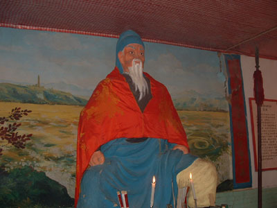
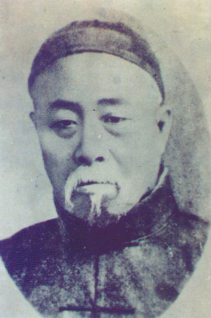
左：姬际可像（形意拳始祖） 右：李存义像（形意拳名家，单刀李）
形意拳术之始，本乎天地之大端与夫造化之原理，盖天地之辟于一无气也，万物之生于无知，形意之成本于无意。盖无意至极生有意，意诚心正，乃至于静，静则察候六脉、溶暇二气，静极生动，动而震发四肢，贯通百骸，是谓先天存乎静，后天藏诸动也。故意为体而形为用，静属阴而动属阳，体用动静得阴阳消长生生之功，而真一之气生焉。
盖形意拳之原理，则培养天一之道，由后天而达于先天也。重阳不重阴，太刚必折；重阴不重阳，过柔不坚；刚柔相济，乾坤之道乃成。
——李洛能《形意拳谱》序（宝鼎《形意拳谱》收录）
形意拳术实与卫生关系至切，如能长习，则疾者能愈，弱者能强，男女老少皆可练习，既无折腰屈膝之痛苦，又无跃高纵险之危劳，斗室席地、长衣缓带也可演习，虽属武术，迹近文雅。
——李洛能《形意拳谱》（宝鼎《形意拳谱》收录）
李剑秋《形意拳术》首章即论形意拳功用，谓形意拳内外兼修，既可强身祛病，又可技击自卫。其要在于以意领气、以气催力、内外合一，取阴阳五行之理，法十二形之物性，为中华武术内家之正脉。
——李剑秋《形意拳术》
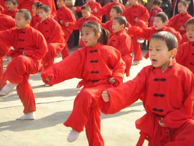
形意拳演示图
姜容樵《形意母拳》论形意拳之优点，谓形意拳单趟直行，朴实无华，不尚花俏，但劲力明快而又刚柔相济，强调"硬打硬进无遮拦"。其技击特点为短打直进、贴身靠打，以"起如风、落如箭"为旨，以"打人如走路，视人如蒿草"为气概。
——姜容樵《形意母拳》
无极者，空空静静，虚若无一物也。圣人自阴阳以说天地。夫有形者生于无形，无形则天地安足生，故曰有太易、太初、太始、太素而太极之五太也。
虚无者，无形之势也；无极者，含一混沌不分之气也，此气乃是先天真一之祖气，氤氲无形，其中有一点生机含藏，名为先天之本，性命之源，生死之道，天地之始，万物之理，阴阳之母，四象之根，八卦之蒂，即太极之发源，而谓之无极也。
——薛颠《形意拳术讲义》/李洛能《形意拳谱》（宝鼎《形意拳谱》收录）
混沦一气内外修，泾渭不分至道由。
空洞自然凝神静，化虚还原此中求。
——姜容樵《形意母拳》形意无极歌
太极者，无形质之本，无极而有极也。自无归有，有必归无，无能生有，有无相生，无有尽时。太极中于四象两仪之母也，其性属土，天地万物皆以土为本，故万物之旺，由土而生；万物之衰，由土而归也。在人五脏属脾，脾旺则人之四肢百骸健全，取诸形意拳为横拳，内包四象，即劈、崩、钻、炮之拳，共为之五德，而又谓之五行。
——薛颠《形意拳术讲义》/李洛能《形意拳谱》
无极乃生阴阳母，动分静合两仪辅。
三才四象皆无遗，五行六合七曜主。
——姜容樵《形意母拳》形意太极歌
两仪者，是太极流行，绵绵不息，分散而生也。太极左伸，则为阳仪；太极右伸，则为阴仪，所谓阳极必生阴，阴极必生阳，生生不息。天为之一大天，人为之一小天，天地相合而生三才。三才者天、地、人三才之象也。
拳术左分为阳仪，右分为阴仪，阴阳伸缩，生生流行，绵绵不息，即拳内动静、起落、进退、伸缩、开合之玄妙也。分而言之为万法，合而言之仍归太极之一气也。
——李洛能《形意拳谱》（宝鼎《形意拳谱》收录）
鹰熊竟志，取法为拳，阴阳暗合，形意之源。
——姜容樵《形意母拳》两仪歌
八势之中，三节宜明，手身及足，四梢中根。
——姜容樵《形意母拳》三才歌
已成四拳，随机应变，静如山岳，动则崩翻。
——姜容樵《形意母拳》四象歌
四拳者：头拳、挑顶、鹰捉、沾手。此即宝鼎《形意拳谱》所载"四拳八式"之由来。
丹田者，阳元之本，气力之府也。欲精技艺必健丹田，欲健丹田尤必先练技艺，二者固互为因果者也。
所谓欲精技艺必先健丹田者，盖以丹田亏则气不充，气不充则力不足，彼五拳十二形空有架势，以之为顾法，则如守者之城池空虚；以之为打法则如战者之兵马嬴弱，故必于临敌挫阵之际，常若有一团气力坚凝于腹脐之间，倏然自腰而背而项直贯于顶，当时眼作先锋以观之，心作元帅以谋之，钻翻横竖起落随时而应用，龙虎猴马鹰熊变化而咸宜，毫忽之间，胜负立判，此丹田充盈而技艺所以精也。
何谓欲健丹田必先练技艺。练之之法一在于聚，一在于运。聚者即八要中所谓舌顶、齿扣、谷道提、三心并诸法也。行之既久而后气可全会于丹田。然聚之而不善运，亦未能发为绝技，必将会于丹田之气力由背骨往上迥住于胸间，充于腹，盈于脏，凝于两肋，冲于脑顶，更兼素日所练之身体异常廉干，手足异常活动，应敌之来而架势即变，应架势之变而气力随之即到，倏忽之间千变万化，此所谓善运用也。总其所以聚之运之者要在平日之勤练技艺，非如求仙者之静坐练丹也。
——刘殿琛《形意拳术抉微》上卷总论
武技一道，有形者为架势，无形者为气力，架势者所以运用气力也，无气力则架势为无用，故气力为架势之本，然欲力之足，必先气之充，故气又为力之本。
八要者何？一内要提，二三心要并，三三意要连，四五行要顺，五四梢要齐，六心要暇，七三尖要对，八眼要毒也。兹分论如下：
紧撮谷道，提其气上聚丹田，复使聚于丹田之气由背骨而直达于脑顶，周流往返循环无端，即谱所谓紧撮谷道内中要提也。
顶心往下，脚心往上，手心往回也。三者所以使气会于一处。盖顶心不往下则上之气不能入丹田，脚心不往上则下之气不能收于丹田，手心不往回则外之气不能缩于丹田。故三心一并而气始可归于一也。
心意、气意、力意三者连而为一，即所谓内三合也。此三者以心为谋主，气为元帅，力为将士，盖气不充则力不足，心虽有谋亦无所用，故气意练好而后可以外帅力意、内应心意，切谓三意之连亦以气为先也。
外五行为五拳即劈崩钻炮横是也，内五行为五脏即心肝脾肺肾是也。外五行之五拳变化应用各顺其序，气力之所到而架势即随之，架势之所至而气力即注之，即谱所云"五行本是五道关，无人把守自遮拦"。
舌要顶，齿要扣，手指脚趾要扣，毛孔要紧也。夫舌顶上嗓则津液上注，气血流通；两齿紧扣则气贯于骨髓；手指脚趾内扣则气注于筋；毛孔紧则周身之气聚而坚。齐之云者即每一作势时，舌之顶、齿之扣、手指脚趾之扣、毛孔之紧，一起如法为之，无先后迟速之分。盖以四者有一缺点则气散而力怠，便不足以言技也。
练时心中不慌不忙之谓也。夫慌有恐惧之意，忙有急剧之意，一恐惧则气馁，一急则气必乱。馁乱之时则手足无所措矣。
鼻尖、手尖、脚尖相对也。夫手尖不对鼻尖，偏于左则右边顾法空虚，偏于右则左边顾法空虚；手于脚、脚于鼻不对，其弊亦同。且三者如甚相偏斜则周身用力不均，必不能团结如一。
毒有疾敏之意，非元气充盈者不能有此。元气充盈五脏舒展，此人之精神必灵活，脑力必充足，而目尤必神光迥然有芒射人。
——刘殿琛《形意拳术抉微》上卷总论
夫人以气为本，以心为根，以息为元，以肾为蒂。一呼百脉皆开，一吸百脉皆闭。且呼吸之法，分有三节道理：
初节道理，乃是色身上事，即练拳术之准绳，呼吸任其自然，有形于外，谓之调息，亦谓练精化气之功夫；
二节道理，谓之身法上事，呼吸有形于内，注意丹田，谓之息调，亦谓之练气化神之功夫；
三节道理，乃是心肾相交之内呼吸，无形无象，绵绵若存，似有非有，无声无臭，谓之胎息，也就是化神还虚之功夫。
——李洛能《形意拳谱》（宝鼎《形意拳谱》收录）
董秀升《岳氏意拳五行精义》中编有"意拳养气学"一章，论述养气为意拳之根本。其要在以意导气、以气运身，静则养、动则用，养气功深则丹田充实，内劲自生。
——董秀升《岳氏意拳五行、十二形精义》
《岳武穆九要论》为形意拳之经典文献，相传为岳飞所作，散佚后仅存此九篇。薛颠《形意拳术讲义》、凌善清《形意五行拳图说》、董秀升《岳氏意拳精义》等民国著作皆收录或引用此论。全文如下：
器，上而通乎道；技，精而入乎神。惟得天下之至正，秉天下之真精者，乃能穷神而入妙，察微而阐幽。形意之用，器也、技也；形意之体，道也、神也。器、技，常人可习而至；道、神，大圣独得而明。
此论者九篇，理要而意精，词详而论辨，学者有志，朝夕渐摹，而一芥之细，可以参天，滥觞之流，泛为江海，九论虽约，未始不可通微，何莫造室升堂也？
从来散之必有其统也，分之必有其合也。盖一本可散为万殊，而万殊咸归一本。
且武事之论，要之，诡变奇化，无往非势，即无往非气，势虽不类，而气归于一。夫所谓一者，从首至足，内之有脏腑筋骨，外之有肌肉、皮肤，五官百骸连属胶聚，而一贯者也。击之不离，牵之不散，上思动而下为随，下思动而上为领，上下动而中节攻，中节动而上下和，内外相连，前后相需，所谓一贯，乃斯之谓。
适时为静，寂然湛然，居其所向，稳如山岳；值时而动，如雷霆崩出也，忽而疾如闪电。气以日积而见益，功以久练而方成。故事无难易，功惟自尽，不可等躐，不可急遽，历阶以升，循序而进，而后官骸肢节自能贯通，上下表里不难联结。庶乎散者统之，分者合之，四体百骸，终归一气而已。
论捶，而必兼论气。夫气主于一，实分为二。所谓二者，即呼吸也，呼吸即阴阳也，阴阳即清浊也。捶不能无动静；气不能无呼吸。吸则为阴，呼则为阳；主乎静者为阴，主乎动者为阳；上升为阳，下降为阴。
要之，阳以滋阴，阴以滋阳，统言为气，分言为阴阳。气不能无阴阳，即人不能无动静，鼻不能无呼吸，口不能无出入，乃对待循环不易之理也。然则气分为二，实主于一，有志斯途者，慎勿以是为拘拘焉，学贵神通，慎勿胶执。
夫气本诸身，而身之节无定处。三节者，上中下也。身则头为上节，身为中节，腿为下节；头则天庭为上节，鼻为中节，海底为下节；中节则胸为上节，腹为中节，丹田为下节；下节则足为梢节，膝为中节，胯为根节；臂则手为梢节，肘为中节，肩为根节。
要之，若无三节之所，即无著意之处。盖上节不明，无依无宗；中节不明，浑身是空；下节不明，动辄跌倾。故气有所发，则梢节动，中节随，根节催。若合而言之，则上至头顶，下至足底，四体百骸，总为一节，夫何三节之有？
夫梢者，身之馀绪也。捶以内而外发，气由身而达梢，故气之用，不本诸身，则虚而不实，不形诸梢，则实而仍虚。
四梢为何？发为血之梢，血为气之海，发欲冲冠，血梢定矣。舌为肉梢，而肉为气之囊，舌欲催齿，而后肉梢足矣。至于骨梢者，齿也。筋梢者，指甲也。要非齿欲断筋，甲欲透骨不能也。果能如此，则四梢足矣。四梢足，而气自足矣。
人得五脏以成形，即由五脏而生气。五脏者，心、肝、脾、肺、肾也，乃性之源、气之本也。心为火而性炎上；肝为木而形曲直；脾为土而势乃敦厚；肺为金而有从革之能；肾为水而有润下之功。
其在内也，胸膈为肺经之位，肺动而诸脏不能静；两乳之中位心，心为君火，心动而相火无不奉合焉；两肋之间右为肝，左为脾；背脊骨十四节，皆为肾位。肾为先天第一，尤为诸脏之源，故肾水足而金、木、水、火、土咸有生机。
象其意则心如猛虎，肝为箭，脾气暴发似雷电，肺经翕张性空灵，肾其伸缩动如风。五行百体，总为一元，四体三心，合为一气。
心与意合，意与气合，气与力合，内三合也；手与足合，肘与膝合，肩与胯合，外三合也，此为六合。
左手与右足相合，左肘与右膝相合，左肩与右胯相合，右之与左亦然。以及头与手合，手与身合，身与步合，孰非外合？心与眼合，肝与筋合，脾与肉合，肺与身合，肾与骨合，孰非内合？岂但六合两已耶？然此特分而言之也，总之一动而无不动，一合而无不合，五行百骸悉在其中矣。
头为六阳之首，而为周身之主，故身动头不可不进也；手为先行，根基在膊，膊不进则手却而不前也；气聚中脘，机关在腰，腰不进则气馁而不实矣；意贯周身，运动在步，步不进意则瞠然无能为矣；以及上左必须进右，上右必须进左，其为七进。
要之，未及其进，合周身而毫无关动之意，一言其进，统全体而俱无抽扯游移之形。
身法为何？纵横、高低、进退、反侧而已。纵则放其势，一往而不返；横则裹其力，开括而莫阻；高则扬其身，而有增长之意；低则抑其身，而有扑捉之形；当进则进，弹其身而勇往直冲；当退则退，领其气而回转伏敛；至于反身顾后，后即前也，侧顾左右，左右岂敢当哉。
总之，机关在眼，变通在心，而握其要者则本诸身，身而进，则四体不令而行矣；身而却，则百骸莫不冥然而退矣。
今夫五官百骸主于动，而实运以步。步乃一身之根基，运动之枢纽也。以故应战对敌，皆本诸身，而所以为身之砥柱者，莫非步；随机应变在于手，而所以为手之转移者，亦在步；进退反侧，非步何以作鼓荡之机；抑扬伸缩，非步无以操变化之妙。
所谓机关者在眼，变化者在心，而所以转弯抹角、千变万化，而不致于窘迫者何？莫非步为之司令耶。拳乃论势，而握要者为步。活与不活，固在于步，灵与不灵，亦在于步，步之为用大矣哉！
——《岳武穆九要论》（薛颠《形意拳术讲义》、凌善清《形意五行拳图说》、董秀升《岳氏意拳精义》等收录）
练习拳术，不可自专自用而固执不通，如专求力，则凝滞不灵；专求重，则沉重不活；专求气，则拘泥不通；专求轻浮，则神意涣散。要而言之，身外形顺者，无形中自增力气；身内中和者，无形中自生灵气。如练至功深圆满之时，凝神于丹田，则身重于泰山；化神成虚空，则身轻如鹅羽，所以练习不可固执一端也。
——薛颠《形意拳术讲义》/李洛能《形意拳谱》
初学武术，谨当切记三害。三害不明，足以伤身。明者自能得道。三害者：一曰努气，二曰拙力，三曰挺胸提腹是也。
努气：用努气者，太刚则折，易生胸满气逆，肺炸诸症。譬之心君不和，百官自失其位。
拙力：用拙力者四肢百骸，血脉不能流通，经络不能舒畅，阴火上升，心为拙气所滞，滞于何处，何处为病，轻者肉中发跳，重者攻之疼痛，甚之可以结成疮毒诸害。
挺胸提腹：挺胸提腹则逆气上行，不归丹田，两足无根，轻如浮萍，拳体不和，即实施万般拳法之攻防谬误多多。
故三害不明，练之可以伤身，明之自能引人入圣，必精心果力，剔除净尽，始得拳学入门要道。
——薛颠《形意拳术讲义》/李洛能《形意拳谱》（宝鼎《形意拳谱》收录）
九要者何？曰：塌、扣、提、顶、裹、松、垂、缩、起钻落翻分明。
塌：腰往下塌劲，尾闾上提督脉之理；
扣：开胸顺气，阴气下降任脉之理也；
提：谷道内提也；
顶：舌顶上腭，头顶，手顶是也；
裹：两肘往里裹劲，如两手心向上托物，必得往里裹劲也；
松：松开两肩如拉弓然，不使膀尖外露也；
垂：两手往外翻之时，两肘极力往下垂劲也；
缩：两肩与两胯里根，极力往回缩劲也；
起钻落翻分明：起为钻，落为翻，起为横，落为顺，起钻是穿，落翻是打，起亦打，落亦打，打起落，如机轮之循环无间也。
以丹田为用根，以意气力为用，以九要为准则，遵而行之，虽不中不远矣。
——薛颠《形意拳术讲义》/凌善清《形意五行拳图说》
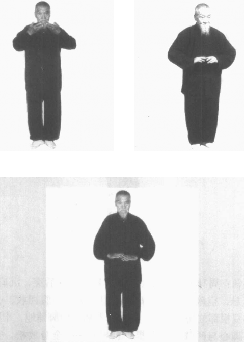
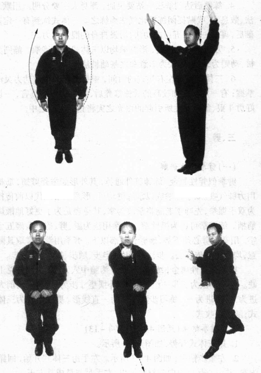
三体式图——左为预备势，右为桩法三体式（形意拳之基础桩法）
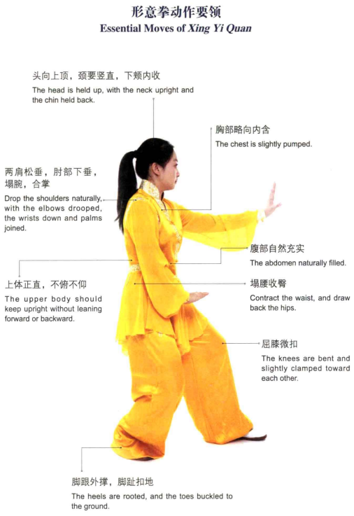
形意拳动作要领图
刘殿琛《形意拳术抉微》之"练气说"中提出练气八要：一内要提、二三心要并、三三意要连、四五行要顺、五四梢要齐、六心要暇、七三尖要对、八眼要毒。（详见第三编"练气说"）
——刘殿琛《形意拳术抉微》
七疾者：眼要疾、手要疾、脚要疾、意要疾、出势要疾、进退要疾、身法要疾也。习拳者具此七疾方能完全制胜。所谓纵横往来、目不及瞬，有如生龙活虎，令人不可捉摸者惟此耳。
一、眼要疾。眼为心之苗，察敌情达之于心，然后能应敌变化，取胜成功。谱云：心为元帅，眼为先锋。
二、手要疾。手者，人之羽翼也，凡捍蔽进攻无不赖之。谱云：手起如箭，落如风，追风赶月不放松。
三、脚要疾。脚者，身体之基也。脚进身进，直抢敌人之位则彼自仆。谱云：脚打踩意莫留情，消息全凭后足蹬，脚踏中门抢他位，就是神手也难防。又云：脚打七分手打三。
四、意要疾。意者体之帅也。眼之明察秋毫，意使之也；手出不空回，拳之精，意使之也；脚之捷，亦意使之捷也。
五、出势要疾。存乎内者为意，现乎外者为势。意既疾矣，出势更不可不疾也。令敌人迅雷不及掩耳，张惶失措，无对待之策，方能制胜。
六、进退要疾。当进则进，竭其力而直前，当退则退，领其气而回转。强则避之宜以智取，弱则攻之可以力敌。要在速进速退不使敌人得乘其隙。
七、身法要疾。凡五行六合七疾八要十二形象等法皆以身法为本。谱云：身如弩弓拳如箭。又云：上法须要先上身，手脚齐到方为真。摇膀活胯，周身辗转，侧身而进，不可前俯后仰、左歪右斜，进则直出，退则直落。必作到疾而不散。
——刘殿琛《形意拳术抉微》上卷总论
靳云亭《形意拳谱五纲七言论》以"顶、扣、元、抱、垂、月、停"七言为要诀，每言三法，共二十一法，道尽形意拳演练关键：
一曰顶（三法） 头顶、舌顶、手顶。头顶而气冲冠，舌顶而吼狮吞象，手顶而力推山。
二曰扣（三法） 肩扣、肘扣、指扣（手足指扣）。扣则气力达于梢节。
三曰元（圆）（三法） 胸圆、背圆、裆圆。胸圆则气畅，背圆则力拔，裆圆则步稳。
四曰抱（三法） 胆抱、身抱、气抱。抱则气聚丹田，内外合一。
五曰垂（三法） 肩垂、肘垂、气垂。垂则力达丹田，气势沉雄。
六曰月（三法） 手月、腿月、身月。取其曲如新月，曲中蓄直，柔中含刚。
七曰停（三法） 停势、停气、停神。势到则停，气到则凝，神到则敛。
——靳云亭《形意拳谱五纲七言论》
一寸、二践、三钻、四蹴（就）、五夹、六合、七疾、八正、九胫（经）、十警、十一起落、十二进退、十三阴阳、十四五行、十五动静、十六虚实。
寸——足步也；践——腿也；钻——身也；蹴——束身也，上下束而为一也；夹——如夹剪之疾也，两腿行如剪也；合——内外六合也；疾——疾毒内外合一也；正——是直也，看斜有正，看正有斜；胫——手摩内五行也；警——警起四梢也，火机一发，其物必落，摩胫摩劲，意气响连声；起落——起是去，落是打，起亦打，落亦打，起落如水之翻浪；进退——进步低，退步高，进退不知枉学艺；阴阳——看阳有阴，看阴有阳；五行——内五行要动，外五行要随；动静——静为本体，动为作用，动静在正发而未发之间；虚实——虚是精也，实是灵也，精灵皆有，成其虚实。
——李洛能《形意拳谱》（宝鼎《形意拳谱》收录）/心意六合拳谱
董秀升《岳氏意拳十二形精义》上编列有"十六要诀"，作为形拳原理之纲要，与上述"十六处练法"相表里，为练习十二形拳之准则。
——董秀升《岳氏意拳五行、十二形精义》
五行者，金、木、水、火、土也。内有五脏，外有五官，皆与五行相配。心属火，肝属木，肺属金，肾属水，脾属土，此五行隐于内者。舌通心，目通肝，耳通肾，鼻通肺，人中通脾，此五行着于外者也。
配与五拳者，为劈、崩、钻、炮、横。劈拳之形似斧，性属金；崩拳之形似箭，性属木；钻拳之形似锥（似闪电），性属水；炮拳之形似炮，性属火；横拳之形似梁（似弹），性属土。
——李洛能《形意拳谱》/薛颠《形意拳术讲义》/凌善清《形意五行拳图说》
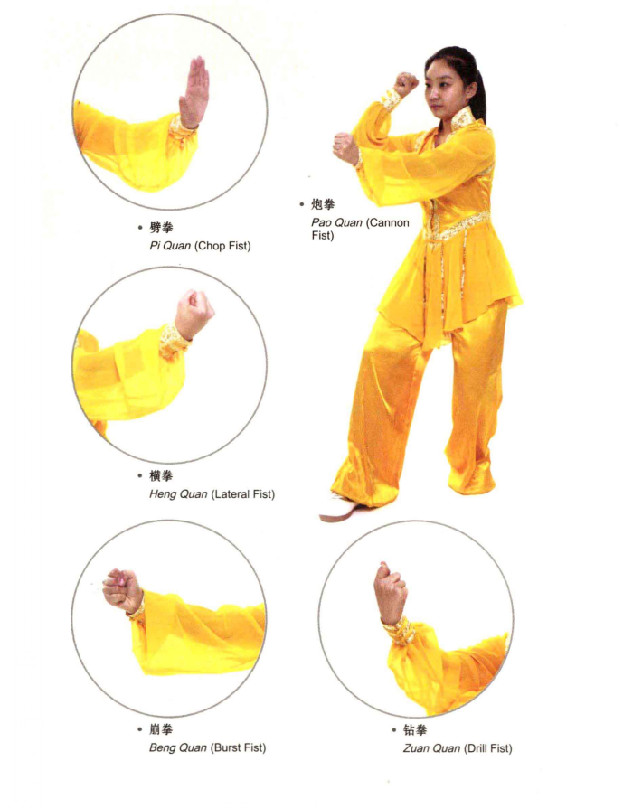
五行拳图——劈、崩、钻、炮、横
劈拳变钻拳，为金生水。钻拳变崩拳，为水生木。崩拳变炮拳，为木生火。炮拳变横拳，为火生土。横拳变劈拳，为土生金。
取相生之道，以为平时之练习，强健其身体，增长其气力。
——李存义拳谱/李洛能《形意拳谱》
劈能生钻钻生崩，崩能生炮炮生横，
横能生劈各形本，万物于土五行生。
——姜容樵《形意母拳》相生歌
劈拳破崩拳，为金克木。崩拳破横拳，为木克土。横拳破钻拳，为土克水。钻拳破炮拳，为水克火。炮拳破劈拳，为火克金。
取相克之义，以为技击之应用。
——李存义拳谱/李洛能《形意拳谱》
劈能克崩崩克横，横能克钻钻克炮，
炮能克劈归易理，不外五行求奥妙。
——姜容樵《形意母拳》相克歌
劈拳似斧性属金，生钻克崩妙绝伦，
金隐于内鼻通肺，五行第一存其真。
钻拳似电性属水，生崩克炮手足腿，
起钻落翻阴阳转，功至还虚是洗髓。
崩拳似箭性属木，生炮克横理不谬，
两拳轮流循环进，牢记左前右足跟。
炮拳似炮性属火，生横克劈内外合，
斜行何妨从军阵，五拳精义十三格。
横拳仅弹性属土，生劈克钻切合弧，
勾股三角极微处，心肝脾肺肾为主。
——姜容樵《形意母拳》五拳歌诀
劈拳性属金，是阴阳连环一气之起落也。气之一静，故形象太极；气之一动而生物，其名为横。横属土，土生万物，故内包四拳。按其五行循环之理，土生金，故先练劈拳，上下运用，有劈物之意，其形似斧，故名劈拳。取诸身内则为肺，劲顺则肺气和，劲谬则肺气乖。夫人以气为主，气和则体壮，气乖则体弱。
初步歌：两手紧握，同变阴拳，左拳落出，肘顺胸前，高不过肩，力垂左肩；右手靠脐，肘至肋边，眼平舌卷，气降丹田。
换步歌：左足既开，右足大进，手足齐落，推挽两迅，左足斜跟，右足仍顺，指开心齐，后手肋近，手足与鼻，列成直阵。
——李洛能《形意拳谱》（宝鼎《形意拳谱》收录）
凌善清《形意五行拳图说》论劈拳：劈拳属金，内应肺，主肃降。形似斧劈，练气沉丹田、开胸顺气。双榻双钻气相连，起吸落呼莫等闲。易骨易筋加洗髓，脚踩手劈一气传。
——凌善清《形意五行拳图说》
崩拳性属木，取之身内属肝。拳之性能是一气循环之往来，势如连珠箭，所谓崩拳似箭属木也。练之拳势顺，则肝舒气平养心神、增劲力，而无目疾、腿病之患；拳势逆，则伤肝，肝伤则两目晕花，两腿痿痛，一身失和。
初步歌：左足先开，右足跟进，胫对左踵，腿曲势峻，两掌变拳，后阴前顺，顺者力挽，阴者前奋，两手互易，步法莫紊。
换步歌：左足再进，右足后跟，右手力挽，左拳阴伸，手足齐出，两手力均；后拳成阴，前拳要顺，目视前手，理要齐心。
——李洛能《形意拳谱》（宝鼎《形意拳谱》收录）
靳云亭论崩拳："前手攞肘望上托，进步出拳先打胁"，演法、练法与打法俱备。
——靳云亭《形意拳谱五纲七言论》
钻拳性属水，是一气之流通曲折无微不至也。钻上如龙突然出水，又似涌泉趵突上翻。取诸身内属肾，其拳快似闪电，形似突泉。拳势顺，则真劲突长，肾足气顺；拳势逆，则拙力横出，肾虚气乖，清气不上升，浊气不下降。
初步歌：左足先开，右足大进，足落拳钻，复拳宜迅，左足斜跟，右足应顺，前拳取鼻，后拳肘进，手足与鼻，列成直阵。
——李洛能《形意拳谱》（宝鼎《形意拳谱》收录）
炮拳性属火，是一气之开合，如炮之突出，形最猛，性最烈。取诸身内属心，形似烈火炮弹。拳势顺，则身体舒畅，心气虚灵；拳势逆，则四肢若愚，心气也乖，关窍昧闭。
初步歌：左足先进，右足随之，右斜左提，眼观一隅，掌变阴拳，右肋左脐，有如丁字，莫亢莫卑，两肘加肋，舌卷气息。
换步歌：右拳顺出，如石之投，左拳外翻，置之眉头，足提者进，与左拳眸，左右互换，勿用他求。
——李洛能《形意拳谱》（宝鼎《形意拳谱》收录）
横拳性属土，是一气团聚而后分散也。取诸身内为脾，脾属土，土旺则脏腑滋和，百疾不生。拳势顺，似土之活，滋生万物，五脏和霭，一气之灌溉；拳势逆，气努力拙，内伤脾土，五脏失调。此拳为五拳之要素。
歌：左足退提，右足孤立，两手成拳，前阴后阳，阴者平肩，阳者肘匿，眼平身正，舌卷屏息，停时虽暂，厚其足力，足进而落，已成剪形，后拳外钻，前拳退形，钻翻小指，退与肘平，下拳横出，故以横名，手足变换，反用则成。
——李洛能《形意拳谱》（宝鼎《形意拳谱》收录）
三节明后，五劲相佐，踩扑裹束，惟决勿错。
——姜容樵《形意母拳》五行歌
身成六式，鸡腿龙身，熊膀鹰爪，虎抱雷鸣。
——姜容樵《形意母拳》六合歌
夫十二形者，本诸天地化生而来也。曩昔本为十形，原属天干气数也；后者扩为十二形，原属地支气数也。盖天之中数五，五气合一，一阴一阳，故倍之成十；地之中数六，六合为一，一阴一阳，故倍之成支，此十二形数之由来也。
十二形者，龙、虎、猴、马、鼍、鸡、鹞、燕、蛇、骀（𩿡）、鹰、熊是也。然诸物所具之特长及性能，人以身形物之形，物之意以人意悟之，此形意拳之命名之理源也。练之洁内华外，使人身体四肢百骸、五脏六腑、七表八里、九道十二经络，无闭塞之处，而百病也无发生之源。
——李洛能《形意拳谱》（宝鼎《形意拳谱》收录）
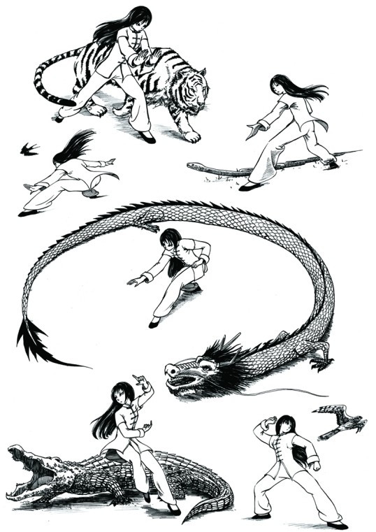
十二形拳图——龙、虎、猴、马、鼍、鸡、鹞、燕、蛇、骀、鹰、熊
龙有搜骨之法、虎有扑食之勇、猴有蹬山之能、马有迹蹄之功、鼍有浮水之灵、鸡有欺闯之勇、鹰有捉拿之技、熊有竖项之力、𩿡有竖尾之才、蛇有拨草之巧、鹞有入林之精、燕有抄水之灵。
——心意六合拳谱（宝鼎《形意拳谱》收录）
龙形属阴搜骨能，左右跃步用柔功。
双掌穿花加起落，两腿抽换要灵通。
虎形属阳力勇猛，跳涧搜山它最能。
抢步起时加双钻，双掌抱气扑如风。
猴形轻灵起纵轻，机警敏捷攀枝能。
叼绳之中加挂印，扒杆加掌向喉中。
马有垂缰疾蹄功，跳涧过步速如风。
丹田抱气双拳裹，左右双冲是真情。
鼍性最灵浮水中，左右拨水是真形。
又有钻意加侧打，左顾右盼拦中用。
金鸡报晓独立能，抖翎发威争斗勇。
独立先左后右意，食米夺米上架行。
鹞有束身入林能，又有翻身钻天功。
先从束身后入林，钻天翻身前后同。
燕雀轻盈抄水能，向后展翅快如风。
上托提撩三抄水，全部动作要轻灵。
蛇体玲珑拨草轻，屈伸如意蟠绕能。
左右斜拨是靠打，横劲原由坎中生。
𩿡性最直能竖尾，上架下落用拳行。
展翅之中有挽式，虚心实腹真道成。
鹰张烈狠捕捉能，上似劈拳下掳功。
左右行之可进退，钻翻采掳是真情。
熊态沉稳威力猛，外阴内阳升降中。
裹翻之中有横拳，左右斜行起落从。
鹰熊合演拳掌变，起鹰落熊走两边。
钻时提足须含意，落时劲贯毫发间。
——李存义拳谱（宝鼎《形意拳谱》收录）
龙者水中最灵猛之物，在卦属震，为木，形本属阴，真阳物也。取诸于身而为离，属心，心属火。龙之天性有蛰龙翻浪、升天之势、抖搜之威、游空探爪、缩骨之精，隐现莫测。此形精意，神发于目，威生于爪，劲起于承浆之穴，与虎形之气循环相接。形势顺，则心内虚空，而心火下降，心宽而智慧生；形势逆，筋络难舒，则身被阴火焚烧矣。
虎者山中猛兽之王，在卦属兑，为金，取之于身而为坎，属水，为肾。坎生风，风从虎，虎之天性有离穴抖毛之威、扑食之勇。此形之威力起于臀尾之劲（督脉），发动涌泉之穴，起落不见形。以拳之运用，外猛而内和。形势顺，则虎伏而丹田气足，能起真精补还于脑。
猴者最灵巧之物也，性属阴土，取诸身内属脾，为心源。其性能有纵山跳涧飞身之灵，有恍闪变化不测之巧。有封猴挂印之精，有偷桃摘果之奇，有上树之巧，有坠枝之力，展转腾挪、神机莫测之妙。拳形和，则身体轻便，快利旋转如风。
鹰者，禽中最猛最狠之物，其性外阳内阴，取诸身内，能起肾中真阳，穿关透体，补还于脑。熊者，物之最钝笨者也，性直不屈，而力最猛，外阴而内阳，取诸身内，能助脾中真阴。气之上升而为阳，气之下降而为阴，谓之阴阳相摩，亦谓鹰熊斗志，总之不过一气之伸缩。
——以上李洛能《形意拳谱》（宝鼎《形意拳谱》收录）
头、肩、肘、胯、膝、足、手是也。七拳者，周身皆可为拳，不独以手为拳也。
——李洛能《形意拳谱》（宝鼎《形意拳谱》收录）
斩——劈拳，截——钻拳，裹——横拳，跨——崩拳，挑——践拳（燕形），顶——炮拳，云——鼍形，领——蛇形。
八字者，形意拳用法之八字诀也。出势用鸡形，转身皆虎托，收势退步横拳。回身者，势尽而身回也；转身者，至开势处而身转也。
——李洛能《形意拳谱》/李存义拳谱（宝鼎《形意拳谱》收录）
步法者：寸、垫（剪）、过、快、践也。
如二三尺远，则用寸步，寸步一步可到也。若四五尺远，则用垫步，必垫一步方能到也。若过身大力强者，则用过步，即进前脚，急过后腿。如有一丈八尺远，则用快步。快步者，起前脚而带后脚，平飞而去。践步者，并非跳跃而往也，此马奔虎窜之意也。非艺成者，不可轻用。
步法中为快步最难，是起前足，则后足平飞而去，如马之奔，如虎之践。足之要义，是起翻落钻，起者如手上翻之撩阴；落钻如石之沉水。夫足之进忌踢，进则用踩，踩者如鹰之捉物也。
——曹继武十法摘要（董秀升《岳氏意拳精义》收录）/李洛能《形意拳谱》
手法者：出、领、起、截也。当胸直出者，谓之出手；劲稍发，有起有落，曲而非曲，直而非直谓之起手。劲稍发，起而落者，谓之领手。顺起顺落参以领搓者，谓之截手。
但起前手，如鹞子钻林，须束身束翅而起。推后手，如燕子取水，往上一翻，长身而落。两手交互，拜起拜落，起如举鼎，落如分砖。总之，肘护心，发手撩阴起，其起如虎之扑人也，其落如鹰之捉物也。
——曹继武十法摘要（董秀升《岳氏意拳精义》收录）
其要者有五恶：即抓、扑、裹、舒、绝也。
拳经云：抓为毒，扑如虎，形似猫扑鼠；裹为护，身不露，敌来吾先顾；抖要绝，力舒展，打倒还嫌慢；心要毒，手如弩，出手如蛇毒。
总而言之，手不离足，足不离手，手足不能离身。分而言之则万法，合而言之则归一气。三回九转是一势，正此之谓也。
——李洛能《形意拳谱》（宝鼎《形意拳谱》收录）
身有八法：起、落、进、退、反、侧、收、纵而已。
起落者，起为横，落为顺也。进退者，进步低，退步高也。反侧者，反身顾后，侧身顾左右也。收纵者，收如伏猫，纵如放虎也。大抵以中平为宜，以正直为妙，与三节法相合。
——曹继武十法摘要（董秀升《岳氏意拳精义》收录）
二人初见面，未交手前，要凝神聚气，审查敌人五行之虚实，注意敌人之动静，站近敌人之身旁，成三角斜形式，占左进右，上右进左，进步退身，灵活要快，形似蛟龙翻浪。
发拳要攥紧，拳紧增气力；发掌要扣手心，掌扣气力加。三节四梢要相齐，心要虚空而恨毒。气要上下三田联络往返，精气能灌溉四肢，以心为主宰，以眼为统帅，以手足为先锋。不贪，不歉，不即，不离，胆要大，心要细，面要善，心要毒，静似书生，动似雷鸣。
审查来人之形势，彼刚我柔，彼柔我刚，刚柔相济。进步发拳，先占中门，肘不离肋，手不离心，束身而起，长身而落，随高打高，随低就低。远发手足，近发肘膝。发手莫有形，身动勿有势，操演时面前似有人，交手时面前似无人。
拳经云：打法须要先上身，足手齐到方为真。身似蛟龙，拳打烈炮，遇敌好似火烧身。起无形落无踪，手似毒箭，身如弩弓，消息全凭后足蹬。
——李洛能《形意拳谱》（宝鼎《形意拳谱》收录）
顾法：单顾、双顾、上顾、下顾、顾前后左右也。单顾者用截手，双顾者用横拳。顾上用冲天炮，顾下用卧地炮。顾前后用前后梢拳或前后斩拳。顾左右用裹边炮或裹身炮。
开法：开左、开右、硬开、软开也。硬开者如前六势之刚劲，软开者如后六势之柔劲。左开用里裹，右开用外裹。
截法：截手、截身、截言、截面、截心也。截手者彼先动而我截之也；截身者彼身未动而我先截之也；截言者言露其意而即截之也；截面者彼面露其色而即截之也；截心者彼眉喜面笑言甘貌恭而我察其有心而迎机以截之也。
上法、进法、追法一气贯注，即所谓随身紧凑，追风赶月不放松是也。
——曹继武十法摘要（董秀升《岳氏意拳精义》收录）
其方有六焉：工、顺、勇、疾、恨、真也。
工者，巧妙也；顺者，自然也；勇者，果断也；疾者，紧急也；恨者，忿怒也，动不容情，心一颤而内劲出也；真者，发定中见之真，而彼难以变化也。六方明，则上法、进法得矣。
——曹继武十法摘要（董秀升《岳氏意拳精义》收录）
眼为见性、耳为灵性、心为勇性，此三性者，术中之妙用也。故眼中不时常循环，耳中不时常报应，心中不时常惊省，则精灵之意在我，庶不致为人所误矣。
——曹继武十法摘要（董秀升《岳氏意拳精义》收录）
连环者，是五行变化合一之势也。五行分演，则谓之五行拳，而为五纲也；合演，则谓之七政，而为连环也。五拳合为一套，悠进悠退，循环连珠，陆离光怪，贯为一气，进退无常，故谓之进退连环拳。
练习连环拳，以五行拳为母，五拳未能习熟，不必学连环拳。此拳共有十六势，进退各法，往返练习范围也小，是亦有引长之法。且连环拳法，以应用为主，握之则成拳，伸之则成掌，故可变为连环掌。刀、剑、棍、枪无不可用，有刃者则砍，有锋者则刺，无锋刃者则打，不过手势之变化耳。
——李洛能《形意拳谱》（宝鼎《形意拳谱》收录）
姜容樵《形意母拳》专设"五拳生克连环说"一章，论述五行拳之生克变化与连环应用。取五行相生之理为练习之序，取五行相克之义为技击之法。五拳合一，变化无穷，循环无端，即所谓"三回九转是一势"。
——姜容樵《形意母拳》
拳法意来本五行，生克里边变化精，
学者要得真消息，只在眼前一寸中。
——心意六合拳谱（宝鼎《形意拳谱》收录）
五拳者，五行也。五行有生有克，而五拳也有生克之理。就五行生克讲义，阴阳消长之理，如循环之无端，拳术之运用无穷也。五行拳合一演习，是谓之连环，单习是知致格物。先哲云：金止于劈，木止于崩，水止于钻，火止于炮，土止于横，五行各用其所当，于是明心见性，至止于至善，故拳明五行生克变化，则进道矣。
——李洛能《形意拳谱》（宝鼎《形意拳谱》收录）
易骨者，明劲也。练时身体动转必须顺逆，而不可悖逆，手足起发必须整齐，不可散乱，为之筑基壮体，充足骨髓，坚如金石，而气质形容如山岳之壮，谓之初步功夫。
易筋者，暗劲也。练时神气圆满，形式绵绵，舒展应用，活泼不滞，为之长筋腾膜，全身筋络伸展，纵横联络，而生无穷之力，此谓之二步功夫。
易髓者，化劲也。练时周身运转、起落、进退、伸缩、开合不用力，将神意蛰藏于祖窍之内，身体圆活无滞，形如流水，其心空空洞洞而养灵根，此谓之三步功夫。
——李洛能《形意拳谱》（宝鼎《形意拳谱》收录）
明劲者，拳内之法，伸缩开合之势，有形于外。
暗劲者，动转神速，动则变，变则化，变化神奇，有形于内。
化劲者，无形无象之手法，不见而章，不动而变之神化也。
此三步功夫是练拳术之根本实际之道理，也谓之练术合道之真诀，知此道理，可谓之性命双修也。
——李洛能《形意拳谱》（宝鼎《形意拳谱》收录）
夫内劲寓于无形之中，接于有形之表，而难以言传，然其理亦可参焉。盖志，气之帅也；气，体之充也。心动而气即随之，气动而力即赴之，此必至之理也。
以为创劲者非也，攻劲者非也。及谓抖劲、崩劲者皆非也，殆粘劲是也。创劲太直，而难起落；攻劲太死，而难变化；抖劲崩劲太促，而难展招。惟粘劲出没其捷，可使日月无光，而不见其形。手到劲发，天地交合，而不费其力。
总之，运于三性之中，发于一战之顷，如虎伸爪不见爪，而物不能逃，龙之用力不见力，而山不能阻。如是上九法合而为一，而克人其有不利乎？
——曹继武十法摘要（董秀升《岳氏意拳精义》收录）
踏者，如踏毒物也。
扑者，如猫虎之扑物也。
裹者，如包裹之不露也。
舒者，舒展其力也。
绝者，抖绝也，一绝无所不绝也。
——心意六合拳谱（宝鼎《形意拳谱》收录）
永力、反力、摄力、拒力、总力、折力、转力、锐力、速力、动力、拧力、超力、钩力、激力、弹力、决力、偏力、平力。
（注：十八力之名目详见宝鼎《形意拳谱》形意拳谱续编，此从略。）
——宝鼎《形意拳谱》
一要塌腰，二要垂肩，三要扣胸，四要顶，五要提，六要横顺知情，七要起钻落翻分明。
塌腰者，尾闾上提，而阳气上升督脉之理，又谓之开督；
垂肩者，肩垂则气贯肘，肘垂则气贯手，气垂则气贯丹田；
扣胸者，开胸顺气，而通任脉之良箴，能将精气上通泥丸，中通心肾，下通气海，而至于涌泉；
顶者，头顶、舌顶、手顶是也。头顶而气冲冠，舌顶而吼狮吞象，手顶而力推山；
提者，谷道内提也。古人云："紧撮谷道内中提，明月辉辉头上飞"；
横者，起也；顺者，落也；起者钻也，落者翻也。起为横之始，钻为横之终；落为顺之始，翻为顺之终。起横不见横，落顺不见顺，起是去落是打，起亦打，落亦打，起落如水之翻浪，方是真起落也。
——李洛能《形意拳谱》（宝鼎《形意拳谱》收录）
头打落意随足走，起而未起占中央；足踏中门抢他位，就是神手亦难防。
肩打一阴返一阳，两手只在洞中藏；左右全凭盖势取，束长二字一命亡。
肘打去意占胸膛，起手好似虎扑羊；或往里拨一旁走，后手只在肋下藏。
把打起落手头挡，降龙伏虎霹雳闪；天地交合云遮月，武艺相战蔽日光。
胯打中节并相连，阴阳相合必自然；外胯好似鱼打挺，里胯藏步变势难。
尾打落意不见形，猛虎坐卧藏洞中；背尾全凭精灵气，起落二字自分明。
膝打几处人不明，好似猛虎出木笼；和身展转不停势，左右明拨任意行。
足打踩意不落空，消息全凭后足蹬；与人交手莫计备，去意好似卷地风。
足打七分手打三，五行四梢要合全；气浮心意随时用，硬打硬碰无遮拦。
臀打去意要占阴，好似返弓一力精；丹田久练灵根本，五行合一见奇能。
——李洛能《形意拳谱》/李存义拳谱（宝鼎《形意拳谱》收录）
混元一气吾道成，道成莫外五真形，
真形莫外真精神，神藏气内丹道成。
如问真形须求真，要知真形合真象，
真象合来有真诀，真诀合道得彻灵。
固灵根而动心者，敌将也；
养灵根而静心者，修道也。
——李洛能《形意拳谱》（宝鼎《形意拳谱》收录）
精养灵根气养神，养功养道见天真，
丹田养就长命宝，万两黄金不与人。
——心意六合拳谱/李洛能《形意拳谱》
用必七体，头肩肘手，
胯膝合足，相助为友。
——姜容樵《形意母拳》七星歌
拳无拳意无意，无意之中是真意。拳打三节不见形，如见形影不为能。随时而发，一言一默、一举一动、行止坐卧，以致于饮食茶水之间，皆可能用，或有人处，或无人处，无处不用，所以无入而不自得，无往而不得其道，以致寂然不动，感而遂通，无可无不可，此是三步化劲，神化之功用也。
然而所用三步功夫，虚实奇正，也不可专有意用于奇正虚实。奇无不正，正无不奇，奇中有正，正中有奇，奇正之变化，如循环之无端，所用无穷也。拳经云：拳去不空回，空回非奇拳，正此之意也。
——李洛能《形意拳谱》（宝鼎《形意拳谱》收录）
震龙兑虎各西东，朱雀元武南北分，
戊己二土中宫位，意为谋引相配成。
眼耳口鼻外五行，手足四梢并顶心，
久练内外如一气，迅雷电雨起暴风。
拳无拳来意无意，无意之中是真意。
诚心炼养精气神，近在眼前变化中。
固灵根而动心者，武艺也；
养灵根而静心者，修道也。
动则为武艺，静则为神仙。
——心意六合拳谱（宝鼎《形意拳谱》收录）
远践、近钻，钻进合膝，沾身纵力，手起如钢锉，手落如钩杆。摩经摩胫，心一动浑身俱动。心动如飞剑，肝动如火焰，肺动成雷声，脾肾肋夹功，五行合一处，放胆即成功。
起落二字自身平，盖世一字是中身，身似弩弓，拳如药箭。能要不是，莫要停住。蛰龙未起雷先动，风吹大树百枝摇。上法须要先上身，手脚齐到才为真。内要提，外要随，起要横，落要顺，打要远，气要催，拳似炮，龙折身，遇敌好似火烧身。
能在一思进，莫在一思存。能在一气先，莫在一气后。明了四梢永不惧，闭住五行永无凶。
——心意六合拳谱（宝鼎《形意拳谱》收录）
曹继武先生十法摘要，为形意拳（心意六合拳）之经典拳论，由戴龙邦得自曹继武之传。董秀升《岳氏意拳五行、十二形精义》下编全文收录。其序曰：
闻子不语力、固尚德不尚力意之也。然夹谷之会必用司马，是武力诚不可少矣。惟此六合意拳则出自宋朝岳武穆王。至明末有山西姬隆风先生，遍访名师，至终南山，曾遇异人，以岳王拳谱传授。予幸得学于郑师之门，以接姬老师之传者也。故法颇精，而予得之尤详，故就其论而释之，著为十法摘要。
十法者：一曰三节，二曰四梢，三曰五行，四曰身法，五曰步法，六曰手法足法，七曰上法进法，八曰顾法开法截法追法，九曰三性调养法，十曰内劲。其全文已分见前述各编中，此处不赘。
——曹继武十法摘要（董秀升《岳氏意拳五行、十二形精义》收录）
郭云深与孙禄堂师徒二人，为形意拳承前启后之关键人物。郭云深遗著《能说形意拳经》系统总结了形意拳"三层道理、三步功夫、三种练法"之理论体系，奠定了形意拳理法之根基。孙禄堂承郭云深之传，又得宋世荣内功之奥、程廷华八卦之精、郝为真太极之妙，融形意、八卦、太极三家于一炉，著《形意拳学》《拳意述真》等书，将形意拳理论推向"拳与道合"之巅峰。本编辑录师徒二人之拳理精要。
郭云深（1820—1901），名峪生，字云深，直隶深县马庄人。幼年好习拳术，后拜李洛能（能然）先生为师，学形意拳术。郭云深以"半步崩拳打天下"闻名，其崩拳之精妙冠绝一时。一生潜心研究形意拳理，遗著《能说形意拳经》，系统论述"三层道理、三步功夫、三种练法"，为形意拳理论之集大成者。其弟子众多，以孙禄堂最为杰出。
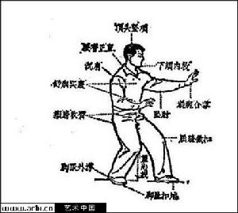
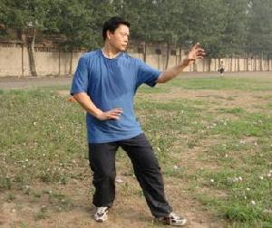
郭云深三体式——形意拳万形之基础
形意拳术，有三层道理，有三步功夫，有三种练法。
三层道理：一、练精化气。二、练气化神。三、练神还虚，练之以变化人之气质，复其本然之真也。
一、易骨：练之以筑其基，以壮其体，骨体坚如铁石，而形式气质，威严壮似泰山。
二、易筋：练之以腾其膜，以长其筋，俗语"筋长力大"，其劲纵横联络，生长而无穷也。
三、洗髓：练之以清虚起内，以轻松其体，内中清虚之象，神气运用，圆活无滞，身体动转，其轻如羽。
一、明劲：练之总以规矩不可易，身体运转要和顺不可乖戾，手足起落要整齐而不可散乱。拳经云：方者以正其中，即此意也。
二、暗劲：练之神气要舒展而不可拘，运用圆通活泼而不可滞。拳经云：圆者以应其外，即此意也。
三、化劲：练之周身四肢运转，起落进退皆不可着力，专神意运用之，虽是神意运用，惟形式规矩仍如前二者不可改移。虽然周身运转不着力，亦不能全不着力，总在神意之贯通耳。
形意拳起点三体式，两足要单重，不可双重。单重者，非一足着地一足悬起，不过前足可虚可实，着重在于后足耳。三体式单重者，得其中和之起点，动作灵活，形式一气，无有间断耳。双重三体式者，形式沉重力气极大，惟是阴阳不分，乾坤不变，奇偶不显，刚柔不判，虚实不明，内开外合不清，进退起落动作不灵活。故三体式为万形之基础也。
形意拳之道无他，神气二者而已。丹道始终全仗呼吸，起初大小周天，以及还虚之功者，皆是呼吸之变化耳。拳术之道亦然。惟有锻炼形体与筋骨之功，丹道是静中求动，动极而复静也；拳术是动中求静，静极而复动也。其初练之似异，以至还虚则同。拳经云："固灵根而动心者，敌将也；养灵根而静心者，修道也。"所以形意拳之道，即丹道之学也。
第一层：将舌卷回，顶住上腭，口似开非开，似合非合，呼吸任其自然，不可着意于呼吸，因手足动作合于规矩，是为调息之法则，亦即练精化气之功夫也。
第二层：口之开合、舌顶上腭等规矩照前，惟呼吸与前一层次不同。前者手足动作是调息的法则，此是息调也。此二层之呼吸，着意与丹田之内呼吸也，又名胎息，是为练气化神之理也。
第三层：前一层是明劲有形于外，二层是暗劲有形于内。此呼吸虽有而若无，勿忘勿助之意思，即是神化之妙用也。心中空空洞洞，不有不无，非有非无，是为无声无臭还虚之道也。
拳中之内劲，是将人之散乱于外之神气，用拳中之规矩，手足身体动作，顺中用逆，缩回于丹田之内，与丹田之元气相交，自无而有，自微而著，自虚而实，皆是渐渐积蓄而成，此谓拳之内劲也。丹书云："以凡人之呼吸，寻真人之呼处。"庄子云："真人呼吸以踵"，亦是此意也。
初步明劲，有形有相之用：起如钢锉，起者去也；落如钩竿，落者回也。起如箭，落如风，追风赶月不放松。足打七分，手打三，五行四梢要合全。气连心意随时用，硬打硬进无遮拦，打人如走路，看人如蒿草。
二步暗劲，有形无迹之用：起似伏龙登天，落如霹雷击地。起无形，落无踪，起意好似卷地风。起不起，何用再起；落不落，何用再落。打起落如水之翻落，不翻不钻，一寸为先。
三步化劲，神化之用：拳无拳，意无意，无意之中是真意。拳打三节不见形，如见形影不为能。随时而发，一言一默，一举一动，行止坐卧，以至饮食茶水之间，皆是用。无处不是用，所以无入而不自得，无往而不得其道，以致寂然不动，感而遂通也。
形意拳术，明劲是小学功夫，进退起落，左转右旋，形式有间断，故谓之小学。暗劲是大学之道，上下相连，手足相顾，内外如一，循环无端，形式无有间断，故谓之大学。《论语》云："一以贯之"，此拳亦是求一以贯之道也。阴阳混成，刚柔相合，内外如一，谓之化劲，用神化去，至于无声无臭之德也。
练拳术不可固执不通。若专求力，即被力拘；专求气，即被气所拘；专求沉重，即为沉重所捆坠；专求轻浮，神气则被轻浮所散。练之形式顺者，自有力；内里中和者，自生气。神意归于丹田者，身自然重如泰山；将神气合一化成虚空者，自然身轻如羽。故不可以专求，虽求久有所得焉，亦是有若无，实若虚，勿忘勿助，不勉而中，不思而得，从容中道而已。
形意拳之横拳，有先天之横，有后天之横，有一行之横。先天之横者，由静而动，为无形之横拳也。横者中也，《易》云："黄中通理，正位居体"，即此意也。拳经云："起无形，起为横"，此横有名无形，为诸形之母也，万物皆含育于其中矣。其横则为拳中之太极也。
形意拳术，头层明劲，谓之练精化气，为丹道中武火也。第二层暗劲，为练气化神，为丹道中文火也。三层化劲，谓之练神还虚，谓丹道中火候纯也。火候纯而内外一气成矣。再练亦无劲，谓无火，谓之练虚合道，以至行止坐卧、一言一默，无往而不合其道也。先人诗曰："道本自然一气游，空空静静最难求，得来万法皆无用，身形应当似水流。"
——以上郭云深《能说形意拳经》（孙禄堂《拳意述真》第四章收录）
孙禄堂（1860—1933），名福全，字禄堂，河北完县人。自幼习武，初从李奎元学形意拳，后从郭云深造诣精深，又从程廷华习八卦掌、从郝为真习太极拳，融三家于一炉，创"三家合一"之武学体系。著《形意拳学》（1915年）、《八卦拳学》（1916年）、《太极拳学》（1919年）、《拳意述真》（1923年）、《八卦剑学》等五部武学专著，构建了近代内家拳最完整的理论体系。其武学思想核心为"拳与道合"，以丹道之理贯通三拳，以形意为本、八卦为变、太极为和。
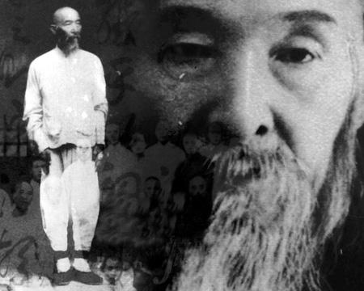
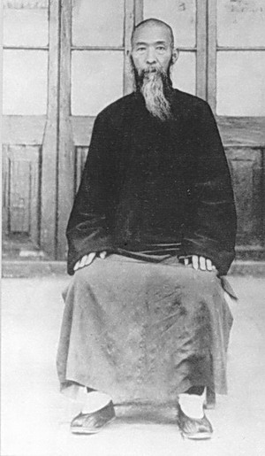
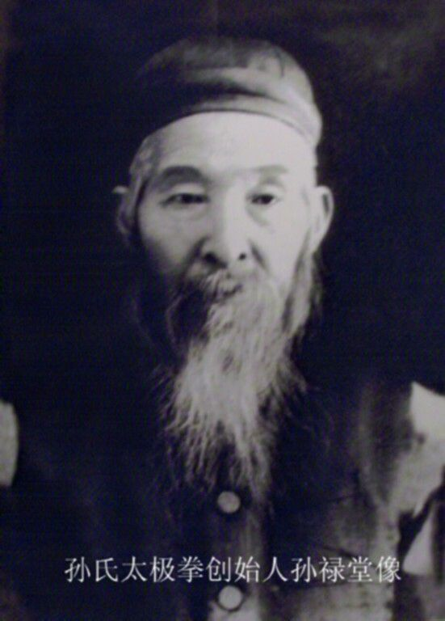
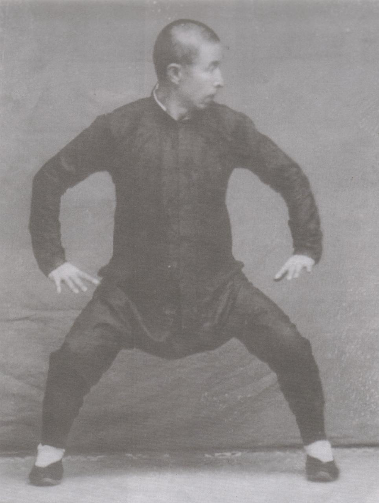
孙禄堂先生（1860—1933）——武学宗师，形意、八卦、太极三家合一
余今已学武矣，又恐流俗余是。未学以前，所慕者形意一门。不知形意一门内有无极、太极、五行、八卦，起点诸法，既其纲领。若论近世太极八卦二门，外家内家两派，及一切体操，推其源，出自古昔一师流传。沿及后世，渐分门类。但循理设想，依据考证，惟太极、形意、八卦三门，盖出一人遗传，仍宜反本归源为是。因揣情度理，三门合为一体。
——孙禄堂《形意拳学》初版自序
夫八卦天也，形意地也，太极人也，三家合一理也。练习之法，形意以经之，八卦以纬之，太极以和之，即圣人云："兴于诗，立于礼，成于乐"也。
余尝自揣三元性质：形意譬如钢球铁球，内外诚实如一；八卦譬如绒球与铁丝盘球，周围玲珑透体；太极如皮球，内外虚灵，有有若无、实若虚之理，此是三元之性质也。
形象虽分三元，要不出人丹田之气也。天地人三才，亦即太极一气之流行也，故三家合为一体。以后好武诸君，务去彼此之见。谚云："一处不到一处迷"，此言良非虚谬。吾人练艺，总要与同道中人互相研究，始能有益。
——孙禄堂《八卦拳学》自序
余自幼练拳以来，闻诸先生之言，云：拳即是道。余闻之怀疑。至练暗劲，刚柔合一，动作灵妙，一任心之自然，与同道人研究，彼此各有所会。惟练化劲之后，内中消息与同道人言之，知者多不肯言，不知者茫然莫解，故笔之于书，以示同道。
余练化劲所经者，每日练一形之式，到停式时，立正，心中神气一定，每觉下部海底处（即阴桥穴处）如有物萌动。初不甚着意。每日练之有动之时，亦有不动之时，日久亦有动之甚久之时。渐渐练于停式，心中一定，如欲泄漏者。想丹书坐功有真阳发动之语，可以采取。彼是静中动，练静坐者知之亦颇多，乃彼是静中求动也。此是拳术动中求静，不知能消化否。又想拳经亦有"处处行持不可移"之言，每日功夫总不间断。
以后练至一停式，周身就有发空之景象，真阳亦发动而欲泄。此情形似柳华阳先生所云：复觉真元之意思也。自觉身子一毫亦不敢动，动即要泄矣。心想仍用拳术之法以化之。内中之意，虚灵下沉，注于丹田，下边用虚灵之意，提住谷道，内外之意思仍如练拳趟子。一般意注于丹田片时，阳即收缩，萌动者上移于丹田矣。此时周身融和，绵绵不断。
以后练至一停式，周身就有发空之景象……心想不动之理，是余练拳术之时，呼吸二息仍在丹田之中，至于不练之时，虽言谈呼吸，并不妨碍内中之真息，并非有意存照，是无时不然也。庄子云："有真人呼吸以踵"，大约即此意也。因有不息而息之火，将此动物消化，畅达于周身也。
以后甚至于睡熟，内中忽动，动而即醒，仍以用练拳之呼吸而消化之，以后睡熟而内中不动，内外周身四肢忽然似空，周身融融和和，如沐如浴之景况。白天行止坐卧，四肢亦有发空之时，身中之情意异常舒畅。以后知丹道有气消之弊病。自己体察内外之情形，人道缩至甚小，消除百病，精神有增无减，到此方知拳术与丹道是一理也。
拳术至练虚合道，是将真意化到至虚至无之境，不动之时，内中寂然，空虚无一动其心，至于忽然有不测之事，虽不见不闻而能觉而避之。《中庸》云："至诚之道可以前知"，是此意也。能到至诚之道者，三派拳术中，余知有四人而已：形意拳李洛能先生，八卦拳董海川先生，太极拳杨露禅先生、武禹襄先生。四位先生皆有不见不闻之知觉。其余诸先生，皆是见闻之知觉而已。如外有不测之事，只要眼见耳闻，无论来者如何疾快，俱能躲闪。因其功夫入于虚境而未到于至虚，不能有不见不闻之知觉也。
——以上孙禄堂《拳意述真》第八章
| 序号 | 书名 | 作者 | 刊行年代 | 师承 |
|---|---|---|---|---|
| 一 | 形意拳术抉微 | 刘殿琛 | 1920年 | 刘奇兰→刘殿琛 |
| 二 | 形意拳术 | 李剑秋 | 1919年 | 李存义、张占魁→李剑秋 |
| 三 | 形意母拳 | 姜容樵 | 约1930年 | 张占魁→姜容樵 |
| 四 | 形意杂式捶 | 姜容樵 | 约1930年 | 张占魁→姜容樵 |
| 五 | 形意拳谱五纲七言论 | 靳云亭 | 1929年 | 尚云祥、孙禄堂→靳云亭 |
| 六 | 形意五行拳图说 | 凌善清 | 1930年 | 吴兴国术家 |
| 七 | 形意拳术讲义 | 薛颠 | 1929年 | 李振邦、薛振纲→薛颠 |
| 八 | 岳氏意拳五行、十二形精义 | 董秀升（辑） | 民国 | 李存义原述→董秀升编辑 |
| 九 | 形意拳谱 | 宝鼎 | 民国 | 积健社传承 |
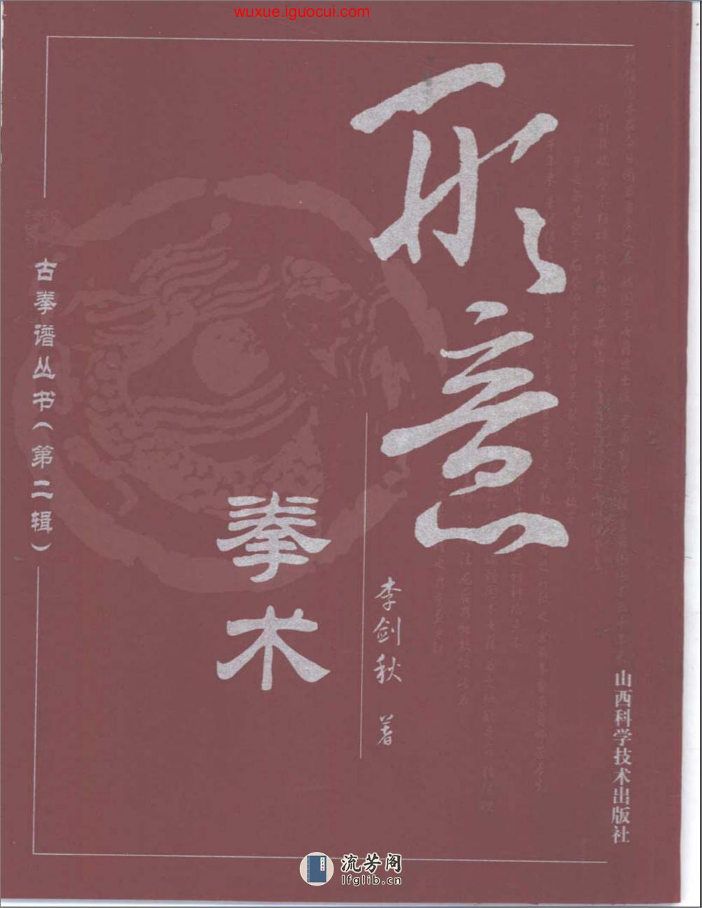
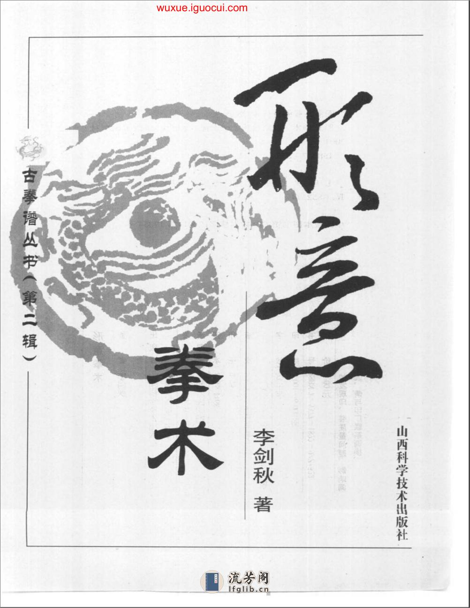
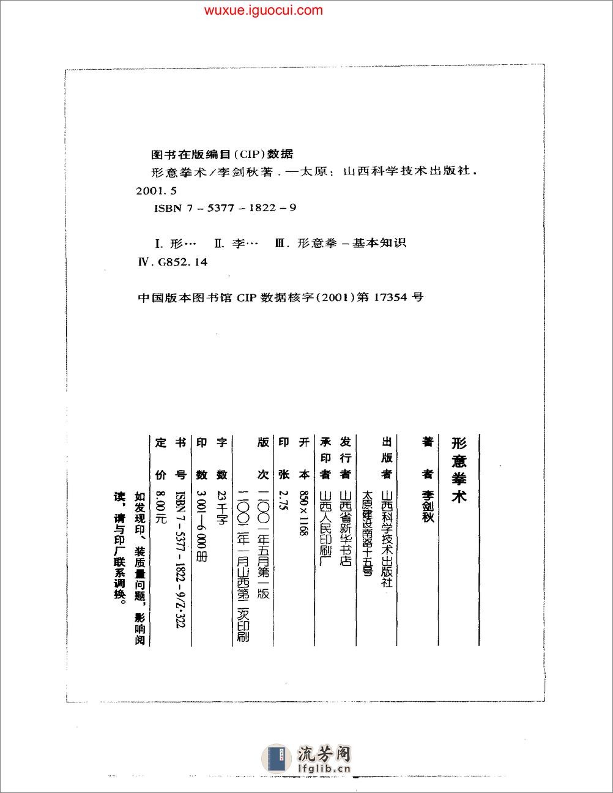
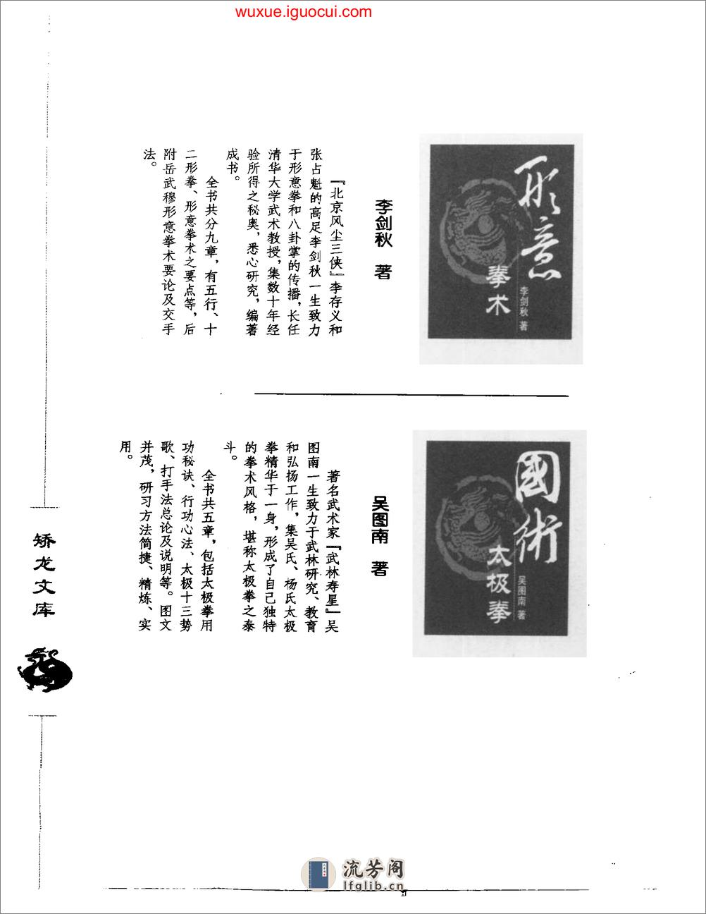
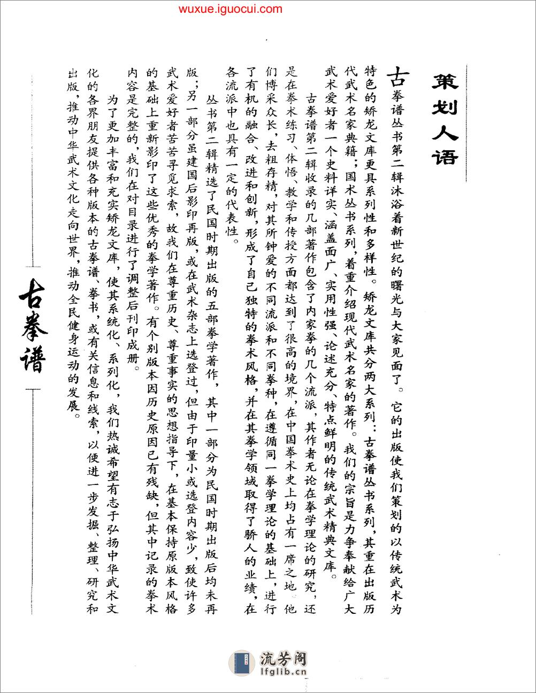
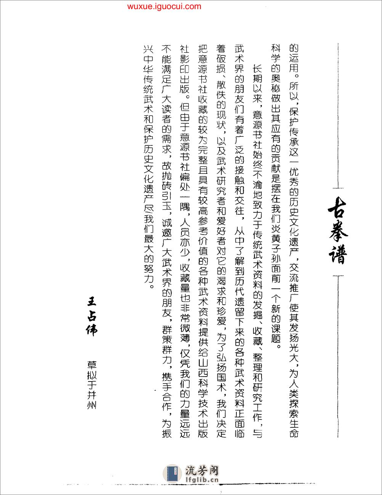
李剑秋《形意拳术》原版书影（民国八年刊行，流芳阁古籍图书馆藏本）
以上辑录所引原文，分别检索自中华典藏、维基文库、百度百科、百度文库、流芳阁古籍图书馆、搜狐、知乎、微信读书等公开网络资源。各书原版影印本可参阅山西科学技术出版社"古拳谱丛书"及香港心一堂"武学·内功经典"等影印本。
本辑录以存原文为旨，按类编次，间有各书互见之篇目（如《岳武穆九要论》《曹继武十法摘要》等），则取其全本，注明出处，不复重引。
以下附录乙为各著作完整原文全录，以便研究者参阅。
以下按著作分列各书完整原文，以存原貌。凡前文已引之段落，此处不复删省，以成完璧。
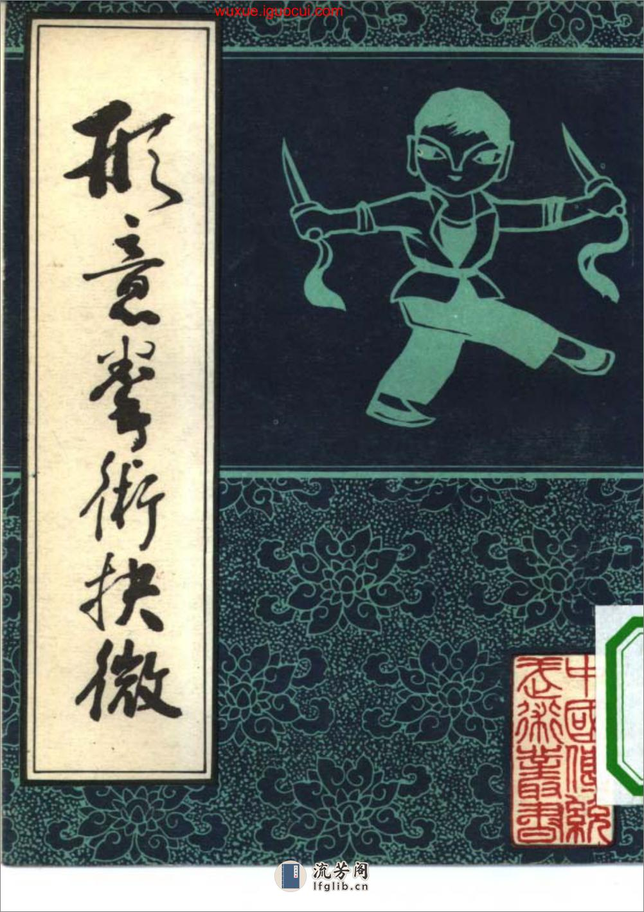
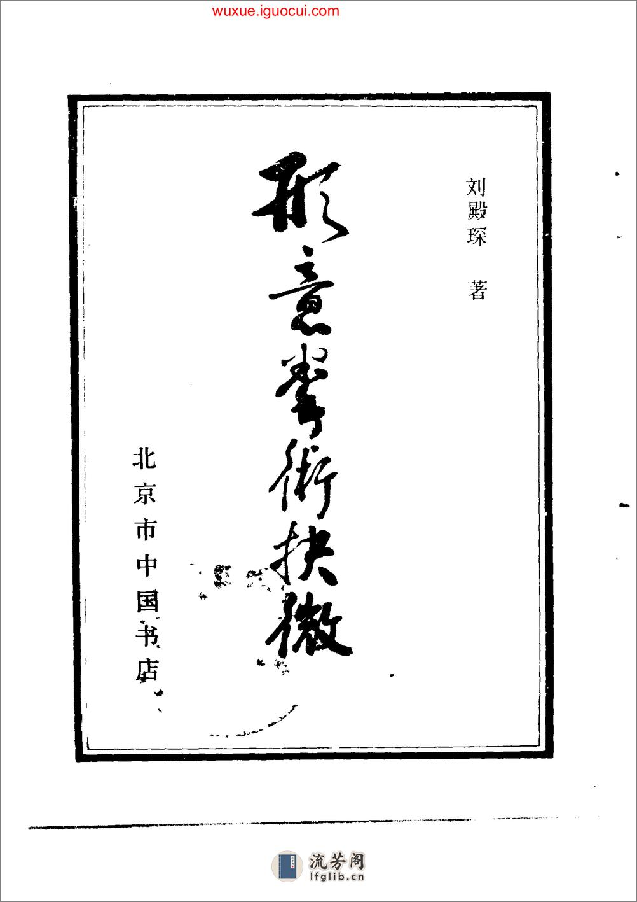
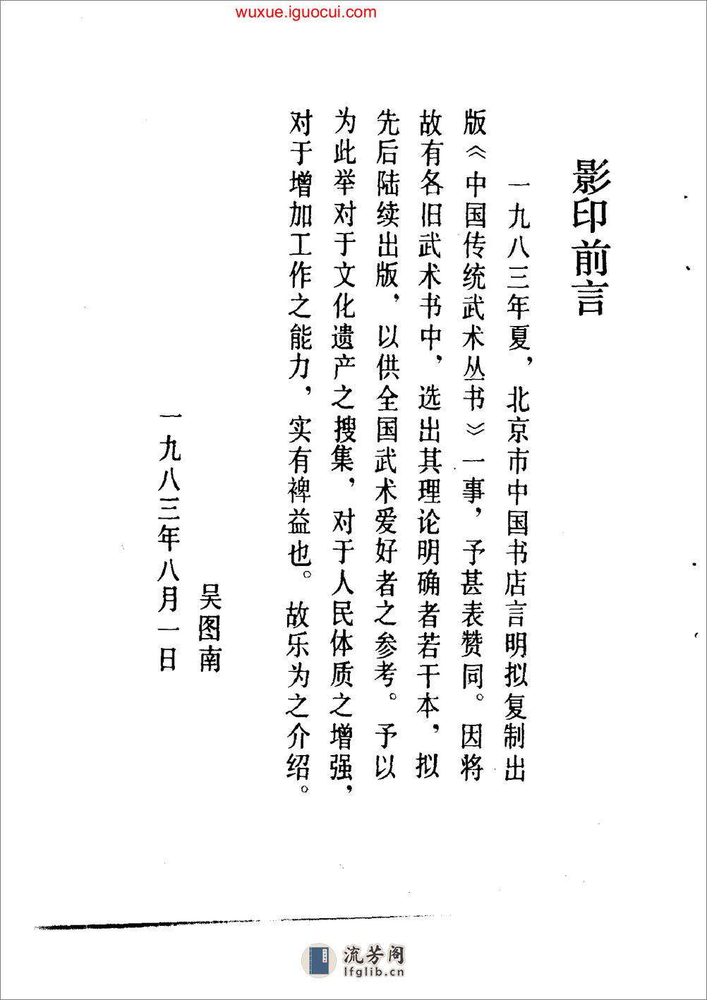
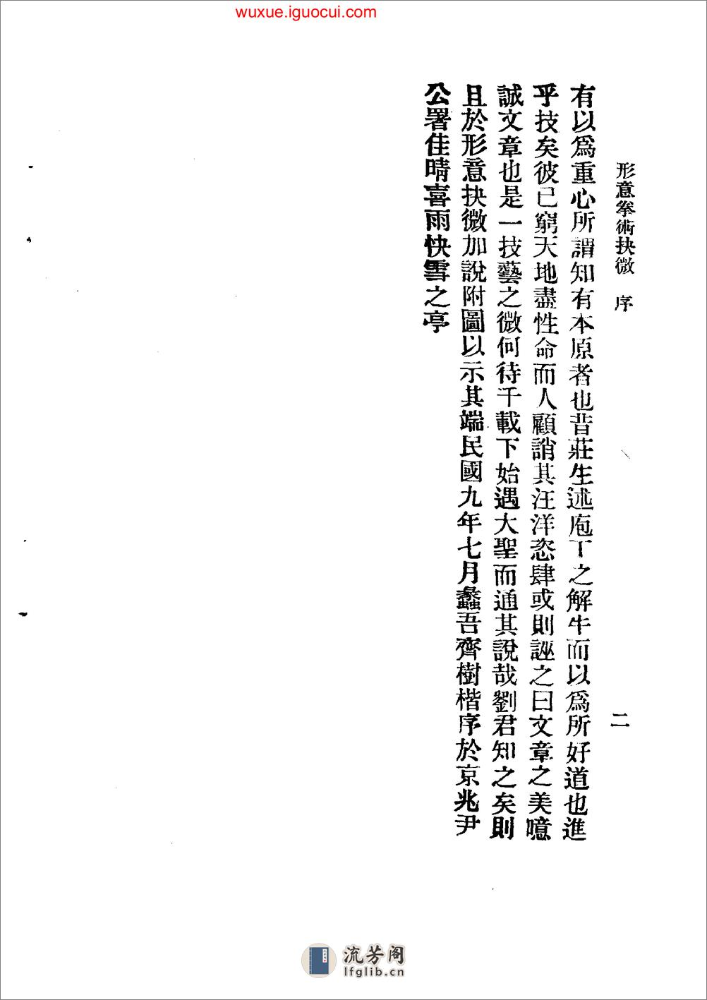
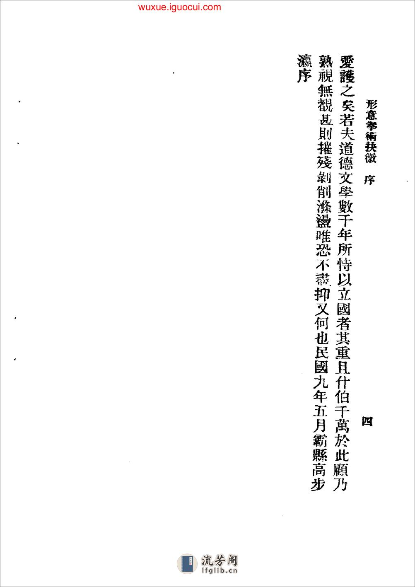
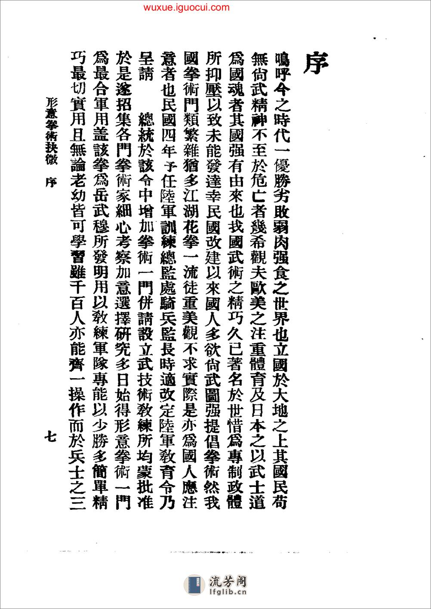
刘殿琛《形意拳术抉微》原版书影（民国九年刊行，流芳阁古籍图书馆藏本）
丹田者，阳元之本，气力之府也。欲精技艺必健丹田，欲健丹田尤必先练技艺，二者固互为因果者也。
所谓欲精技艺必先健丹田者，盖以丹田亏则气不充，气不充则力不足，彼五拳十二形空有架势，以之为顾法，则如守者之城池空虚；以之为打法则如战者之兵马嬴弱，故必于临敌挫阵之际，常若有一团气力坚凝于腹脐之间，倏然自腰而背而项直贯于顶，当时眼作先锋以观之，心作元帅以谋之，钻翻横竖起落随时而应用，龙虎猴马鹰熊变化而咸宜，毫忽之间，胜负立判，此丹田充盈而技艺所以精也。
何谓欲健丹田必先练技艺。练之之法一在于聚，一在于运。聚者即八要中所谓舌顶、齿扣、谷道提、三心并诸法也。行之既久而后气可全会于丹田。然聚之而不善运，亦未能发为绝技，必将会于丹田之气力由背骨往上迥住于胸间，充于腹，盈于脏，凝于两肋，冲于脑顶，更兼素日所练之身体异常廉干，手足异常活动，应敌之来而架势即变，应架势之变而气力随之即到，倏忽之间千变万化，此所谓善运用也。总其所以聚之运之者要在平日之勤练技艺，非如求仙者之静坐练丹也。
武技一道，有形者为架势，无形者为气力，架势者所以运用气力也，无气力则架势为无用，故气力为架势之本，然欲力之足，必先气之充，故气又为力之本。
八要者何？一内要提，二三心要并，三三意要连，四五行要顺，五四梢要齐，六心要暇，七三尖要对，八眼要毒也。兹分论如下：
（一）内要提 紧撮谷道，提其气上聚丹田，复使聚于丹田之气由背骨而直达于脑顶，周流往返循环无端，即谱所谓紧撮谷道内中要提也。
（二）三心要并 顶心往下，脚心往上，手心往回也。三者所以使气会于一处。盖顶心不往下则上之气不能入丹田，脚心不往上则下之气不能收于丹田，手心不往回则外之气不能缩于丹田。故三心一并而气始可归于一也。
（三）三意要连 心意、气意、力意三者连而为一，即所谓内三合也。此三者以心为谋主，气为元帅，力为将士，盖气不充则力不足，心虽有谋亦无所用，故气意练好而后可以外帅力意、内应心意，切谓三意之连亦以气为先也。
（四）五行要顺 外五行为五拳即劈崩钻炮横是也，内五行为五脏即心肝脾肺肾是也。外五行之五拳变化应用各顺其序，气力之所到而架势即随之，架势之所至而气力即注之，即谱所云"五行本是五道关，无人把守自遮拦"。
（五）四梢要齐 舌要顶，齿要扣，手指脚趾要扣，毛孔要紧也。夫舌顶上嗓则津液上注，气血流通；两齿紧扣则气贯于骨髓；手指脚趾内扣则气注于筋；毛孔紧则周身之气聚而坚。齐之云者即每一作势时，舌之顶、齿之扣、手指脚趾之扣、毛孔之紧，一起如法为之，无先后迟速之分。盖以四者有一缺点则气散而力怠，便不足以言技也。
（六）心要暇 练时心中不慌不忙之谓也。夫慌有恐惧之意，忙有急剧之意，一恐惧则气馁，一急则气必乱。馁乱之时则手足无所措矣。
（七）三尖要对 鼻尖、手尖、脚尖相对也。夫手尖不对鼻尖，偏于左则右边顾法空虚，偏于右则左边顾法空虚；手于脚、脚于鼻不对，其弊亦同。且三者如甚相偏斜则周身用力不均，必不能团结如一。
（八）眼要毒 毒有疾敏之意，非元气充盈者不能有此。元气充盈五脏舒展，此人之精神必灵活，脑力必充足，而目尤必神光迥然有芒射人。
七疾者：眼要疾、手要疾、脚要疾、意要疾、出势要疾、进退要疾、身法要疾也。习拳者具此七疾方能完全制胜。所谓纵横往来、目不及瞬，有如生龙活虎，令人不可捉摸者惟此耳。
一、眼要疾。眼为心之苗，察敌情达之于心，然后能应敌变化，取胜成功。谱云：心为元帅，眼为先锋。
二、手要疾。手者，人之羽翼也，凡捍蔽进攻无不赖之。谱云：手起如箭，落如风，追风赶月不放松。
三、脚要疾。脚者，身体之基也。脚进身进，直抢敌人之位则彼自仆。谱云：脚打踩意莫留情，消息全凭后足蹬，脚踏中门抢他位，就是神手也难防。又云：脚打七分手打三。
四、意要疾。意者体之帅也。眼之明察秋毫，意使之也；手出不空回，拳之精，意使之也；脚之捷，亦意使之捷也。
五、出势要疾。存乎内者为意，现乎外者为势。意既疾矣，出势更不可不疾也。令敌人迅雷不及掩耳，张惶失措，无对待之策，方能制胜。
六、进退要疾。当进则进，竭其力而直前，当退则退，领其气而回转。强则避之宜以智取，弱则攻之可以力敌。要在速进速退不使敌人得乘其隙。
七、身法要疾。凡五行六合七疾八要十二形象等法皆以身法为本。谱云：身如弩弓拳如箭。又云：上法须要先上身，手脚齐到方为真。摇膀活胯，周身辗转，侧身而进，不可前俯后仰、左歪右斜，进则直出，退则直落。必作到疾而不散。
——刘殿琛《形意拳术抉微》上卷总论（民国九年刊行）
《岳武穆九要论》为形意拳之经典文献，相传为岳飞所作。薛颠《形意拳术讲义》、凌善清《形意五行拳图说》、董秀升《岳氏意拳精义》等民国著作皆收录或引用此论。全文如下：
器，上而通乎道；技，精而入乎神。惟得天下之至正，秉天下之真精者，乃能穷神而入妙，察微而阐幽。形意之用，器也、技也；形意之体，道也、神也。器、技，常人可习而至；道、神，大圣独得而明。
此论者九篇，理要而意精，词详而论辨，学者有志，朝夕渐摹，而一芥之细，可以参天，滥觞之流，泛为江海，九论虽约，未始不可通微，何莫造室升堂也？
从来散之必有其统也，分之必有其合也。盖一本可散为万殊，而万殊咸归一本。
且武事之论，要之，诡变奇化，无往非势，即无往非气，势虽不类，而气归于一。夫所谓一者，从首至足，内之有脏腑筋骨，外之有肌肉、皮肤，五官百骸连属胶聚，而一贯者也。击之不离，牵之不散，上思动而下为随，下思动而上为领，上下动而中节攻，中节动而上下和，内外相连，前后相需，所谓一贯，乃斯之谓。
适时为静，寂然湛然，居其所向，稳如山岳；值时而动，如雷霆崩出也，忽而疾如闪电。气以日积而见益，功以久练而方成。故事无难易，功惟自尽，不可等躐，不可急遽，历阶以升，循序而进，而后官骸肢节自能贯通，上下表里不难联结。庶乎散者统之，分者合之，四体百骸，终归一气而已。
论捶，而必兼论气。夫气主于一，实分为二。所谓二者，即呼吸也，呼吸即阴阳也，阴阳即清浊也。捶不能无动静；气不能无呼吸。吸则为阴，呼则为阳；主乎静者为阴，主乎动者为阳；上升为阳，下降为阴。
要之，阳以滋阴，阴以滋阳，统言为气，分言为阴阳。气不能无阴阳，即人不能无动静，鼻不能无呼吸，口不能无出入，乃对待循环不易之理也。然则气分为二，实主于一，有志斯途者，慎勿以是为拘拘焉，学贵神通，慎勿胶执。
夫气本诸身，而身之节无定处。三节者，上中下也。身则头为上节，身为中节，腿为下节；头则天庭为上节，鼻为中节，海底为下节；中节则胸为上节，腹为中节，丹田为下节；下节则足为梢节，膝为中节，胯为根节；臂则手为梢节，肘为中节，肩为根节。
要之，若无三节之所，即无著意之处。盖上节不明，无依无宗；中节不明，浑身是空；下节不明，动辄跌倾。故气有所发，则梢节动，中节随，根节催。若合而言之，则上至头顶，下至足底，四体百骸，总为一节，夫何三节之有？
夫梢者，身之馀绪也。捶以内而外发，气由身而达梢，故气之用，不本诸身，则虚而不实，不形诸梢，则实而仍虚。
四梢为何？发为血之梢，血为气之海，发欲冲冠，血梢定矣。舌为肉梢，而肉为气之囊，舌欲催齿，而后肉梢足矣。至于骨梢者，齿也。筋梢者，指甲也。要非齿欲断筋，甲欲透骨不能也。果能如此，则四梢足矣。四梢足，而气自足矣。
人得五脏以成形，即由五脏而生气。五脏者，心、肝、脾、肺、肾也，乃性之源、气之本也。心为火而性炎上；肝为木而形曲直；脾为土而势乃敦厚；肺为金而有从革之能；肾为水而有润下之功。
其在内也，胸膈为肺经之位，肺动而诸脏不能静；两乳之中位心，心为君火，心动而相火无不奉合焉；两肋之间右为肝，左为脾；背脊骨十四节，皆为肾位。肾为先天第一，尤为诸脏之源，故肾水足而金、木、水、火、土咸有生机。
象其意则心如猛虎，肝为箭，脾气暴发似雷电，肺经翕张性空灵，肾其伸缩动如风。五行百体，总为一元，四体三心，合为一气。
心与意合，意与气合，气与力合，内三合也；手与足合，肘与膝合，肩与胯合，外三合也，此为六合。
左手与右足相合，左肘与右膝相合，左肩与右胯相合，右之与左亦然。以及头与手合，手与身合，身与步合，孰非外合？心与眼合，肝与筋合，脾与肉合，肺与身合，肾与骨合，孰非内合？岂但六合两已耶？然此特分而言之也，总之一动而无不动，一合而无不合，五行百骸悉在其中矣。
头为六阳之首，而为周身之主，故身动头不可不进也；手为先行，根基在膊，膊不进则手却而不前也；气聚中脘，机关在腰，腰不进则气馁而不实矣；意贯周身，运动在步，步不进意则瞠然无能为矣；以及上左必须进右，上右必须进左，其为七进。
要之，未及其进，合周身而毫无关动之意，一言其进，统全体而俱无抽扯游移之形。
身法为何？纵横、高低、进退、反侧而已。纵则放其势，一往而不返；横则裹其力，开括而莫阻；高则扬其身，而有增长之意；低则抑其身，而有扑捉之形；当进则进，弹其身而勇往直冲；当退则退，领其气而回转伏敛；至于反身顾后，后即前也，侧顾左右，左右岂敢当哉。
总之，机关在眼，变通在心，而握其要者则本诸身，身而进，则四体不令而行矣；身而却，则百骸莫不冥然而退矣。
今夫五官百骸主于动，而实运以步。步乃一身之根基，运动之枢纽也。以故应战对敌，皆本诸身，而所以为身之砥柱者，莫非步；随机应变在于手，而所以为手之转移者，亦在步；进退反侧，非步何以作鼓荡之机；抑扬伸缩，非步无以操变化之妙。
所谓机关者在眼，变化者在心，而所以转弯抹角、千变万化，而不致于窘迫者何？莫非步为之司令耶。拳乃论势，而握要者为步。活与不活，固在于步，灵与不灵，亦在于步，步之为用大矣哉！
——《岳武穆九要论》（薛颠《形意拳术讲义》、凌善清《形意五行拳图说》、董秀升《岳氏意拳精义》收录）
闻子不语力、固尚德不尚力意之也。然夹谷之会必用司马，是武力诚不可少矣。惟此六合意拳则出自宋朝岳武穆王。至明末有山西姬隆风先生，遍访名师，至终南山，曾遇异人，以岳王拳谱传授。予幸得学于郑师之门，以接姬老师之传者也。故法颇精，而予得之尤详，故就其论而释之，著为十法摘要。
三节举一身而言，手肘为梢节，身为中节，脚腿为根节是也。分而言之，则三节之中亦各有三节也。如手为梢节，肘为中节，肩为根节，此梢节中之三节也；脚为梢节，膝为中节，胯为根节，此根节中之三节也；头为梢节，心为中节，丹田为根节，此中节中之三节也。要不外起、随、追而已，盖梢节起，中节随，根节追之，庶不至有长短曲直参差、俯仰之病，此三节之所以贵明也。
人之血、肉、筋、骨之末端曰梢。盖发为血梢，舌为肉梢，牙为骨梢，爪为筋梢。四梢用力，则可变其常态，能使人生畏惧焉。血梢：怒气填胸，竖发冲冠，血轮速转，敌胆自寒。肉梢：舌卷气降，虽山亦撼，肉坚似铁，精神勇敢。骨梢：有勇在骨，切齿则发，敌肉可食，啮裂目突。筋梢：虎威鹰猛，以爪为锋，手攫足踏，气势皆雄。
五行者，金、木、水、火、土之谓也。如人之内有五脏，外有五官，皆与五行相配合。心属火，脾属土，肝属木，肺属金，肾属水，此五行隐于内者。目通脾，鼻通肺，舌通心，耳通肾，人中通脾，此五行之著于外者。金生水、水生木、木生火、火生土、土生金，是五行相生之道也。金克木、木克土、土克水、水克火、火克金，此五行相克之道也。
身有八法：起、落、进、退、反、侧、收、纵而已。起落者，起为横，落为顺也。进退者，进步低，退步高也。反侧者，反身顾后，侧身顾左右也。收纵者，收如伏猫，纵如放虎也。大抵以中平为宜，以正直为妙，与三节法相合。
步法者：寸、垫（剪）、过、快、践也。如二三尺远，则用寸步，寸步一步可到也。若四五尺远，则用垫步，必垫一步方能到也。若过身大力强者，则用过步，即进前脚，急过后腿。如有一丈八尺远，则用快步。快步者，起前脚而带后脚，平飞而去。践步者，并非跳跃而往也，此马奔虎窜之意也。非艺成者，不可轻用。步法中为快步最难，是起前足，则后足平飞而去，如马之奔，如虎之践。足之要义，是起翻落钻，起者如手上翻之撩阴；落钻如石之沉水。夫足之进忌踢，进则用踩，踩者如鹰之捉物也。
手法者：出、领、起、截也。当胸直出者，谓之出手；劲稍发，有起有落，曲而非曲，直而非直谓之起手。劲稍发，起而落者，谓之领手。顺起顺落参以领搓者，谓之截手。但起前手，如鹞子钻林，须束身束翅而起。推后手，如燕子取水，往上一翻，长身而落。两手交互，拜起拜落，起如举鼎，落如分砖。总之，肘护心，发手撩阴起，其起如虎之扑人也，其落如鹰之捉物也。
其方有六焉：工、顺、勇、疾、恨、真也。工者，巧妙也；顺者，自然也；勇者，果断也；疾者，紧急也；恨者，忿怒也，动不容情，心一颤而内劲出也；真者，发定中见之真，而彼难以变化也。六方明，则上法、进法得矣。
顾法：单顾、双顾、上顾、下顾、顾前后左右也。单顾者用截手，双顾者用横拳。顾上用冲天炮，顾下用卧地炮。顾前后用前后梢拳或前后斩拳。顾左右用裹边炮或裹身炮。
开法：开左、开右、硬开、软开也。硬开者如前六势之刚劲，软开者如后六势之柔劲。左开用里裹，右开用外裹。
截法：截手、截身、截言、截面、截心也。截手者彼先动而我截之也；截身者彼身未动而我先截之也；截言者言露其意而即截之也；截面者彼面露其色而即截之也；截心者彼眉喜面笑言甘貌恭而我察其有心而迎机以截之也。
上法、进法、追法一气贯注，即所谓随身紧凑，追风赶月不放松是也。
眼为见性、耳为灵性、心为勇性，此三性者，术中之妙用也。故眼中不时常循环，耳中不时常报应，心中不时常惊省，则精灵之意在我，庶不致为人所误矣。
夫内劲寓于无形之中，接于有形之表，而难以言传，然其理亦可参焉。盖志，气之帅也；气，体之充也。心动而气即随之，气动而力即赴之，此必至之理也。以为创劲者非也，攻劲者非也。及谓抖劲、崩劲者皆非也，殆粘劲是也。创劲太直，而难起落；攻劲太死，而难变化；抖劲崩劲太促，而难展招。惟粘劲出没其捷，可使日月无光，而不见其形。手到劲发，天地交合，而不费其力。总之，运于三性之中，发于一战之顷，如虎伸爪不见爪，而物不能逃，龙之用力不见力，而山不能阻。如是上九法合而为一，而克人其有不利乎？
——曹继武十法摘要（董秀升《岳氏意拳五行、十二形精义》收录）
李洛能（能然）先生之《形意拳谱》，为形意拳开宗立派之根本经典。宝鼎《形意拳谱》、姜容樵《形意母拳》、薛颠《形意拳术讲义》等民国著作多收录或引用此谱。以下辑录其要篇全文。
形意拳术之始，本乎天地之大端与夫造化之原理，盖天地之辟于一无气也，万物之生于无知，形意之成本于无意。盖无意至极生有意，意诚心正，乃至于静，静则察候六脉、溶暇二气，静极生动，动而震发四肢，贯通百骸，是谓先天存乎静，后天藏诸动也。故意为体而形为用，静属阴而动属阳，体用动静得阴阳消长生生之功，而真一之气生焉。
盖形意拳之原理，则培养天一之道，由后天而达于先天也。重阳不重阴，太刚必折；重阴不重阳，过柔不坚；刚柔相济，乾坤之道乃成。
无极者，空空静静，虚若无一物也。圣人自阴阳以说天地。夫有形者生于无形，无形则天地安足生，故曰有太易、太初、太始、太素而太极之五太也。虚无者，无形之势也；无极者，含一混沌不分之气也，此气乃是先天真一之祖气，氤氲无形，其中有一点生机含藏，名为先天之本，性命之源，生死之道，天地之始，万物之理，阴阳之母，四象之根，八卦之蒂，即太极之发源，而谓之无极也。
太极者，无形质之本，无极而有极也。自无归有，有必归无，无能生有，有无相生，无有尽时。太极中于四象两仪之母也，其性属土，天地万物皆以土为本，故万物之旺，由土而生；万物之衰，由土而归也。在人五脏属脾，脾旺则人之四肢百骸健全，取诸形意拳为横拳，内包四象，即劈、崩、钻、炮之拳，共为之五德，而又谓之五行。
两仪者，是太极流行，绵绵不息，分散而生也。太极左伸，则为阳仪；太极右伸，则为阴仪，所谓阳极必生阴，阴极必生阳，生生不息。天为之一大天，人为之一小天，天地相合而生三才。三才者天、地、人三才之象也。拳术左分为阳仪，右分为阴仪，阴阳伸缩，生生流行，绵绵不息，即拳内动静、起落、进退、伸缩、开合之玄妙也。分而言之为万法，合而言之仍归太极之一气也。
劈拳性属金，是阴阳连环一气之起落也。气之一静，故形象太极；气之一动而生物，其名为横。横属土，土生万物，故内包四拳。按其五行循环之理，土生金，故先练劈拳，上下运用，有劈物之意，其形似斧，故名劈拳。取诸身内则为肺，劲顺则肺气和，劲谬则肺气乖。夫人以气为主，气和则体壮，气乖则体弱。
初步歌：两手紧握，同变阴拳，左拳落出，肘顺胸前，高不过肩，力垂左肩；右手靠脐，肘至肋边，眼平舌卷，气降丹田。
换步歌：左足既开，右足大进，手足齐落，推挽两迅，左足斜跟，右足仍顺，指开心齐，后手肋近，手足与鼻，列成直阵。
崩拳性属木，取之身内属肝。拳之性能是一气循环之往来，势如连珠箭，所谓崩拳似箭属木也。练之拳势顺，则肝舒气平养心神、增劲力，而无目疾、腿病之患；拳势逆，则伤肝，肝伤则两目晕花，两腿痿痛，一身失和。
初步歌：左足先开，右足跟进，胫对左踵，腿曲势峻，两掌变拳，后阴前顺，顺者力挽，阴者前奋，两手互易，步法莫紊。
换步歌：左足再进，右足后跟，右手力挽，左拳阴伸，手足齐出，两手力均；后拳成阴，前拳要顺，目视前手，理要齐心。
钻拳性属水，是一气之流通曲折无微不至也。钻上如龙突然出水，又似涌泉趵突上翻。取诸身内属肾，其拳快似闪电，形似突泉。拳势顺，则真劲突长，肾足气顺；拳势逆，则拙力横出，肾虚气乖，清气不上升，浊气不下降。
初步歌：左足先开，右足大进，足落拳钻，复拳宜迅，左足斜跟，右足应顺，前拳取鼻，后拳肘进，手足与鼻，列成直阵。
炮拳性属火，是一气之开合，如炮之突出，形最猛，性最烈。取诸身内属心，形似烈火炮弹。拳势顺，则身体舒畅，心气虚灵；拳势逆，则四肢若愚，心气也乖，关窍昧闭。
初步歌：左足先进，右足随之，右斜左提，眼观一隅，掌变阴拳，右肋左脐，有如丁字，莫亢莫卑，两肘加肋，舌卷气息。
换步歌：右拳顺出，如石之投，左拳外翻，置之眉头，足提者进，与左拳眸，左右互换，勿用他求。
横拳性属土，是一气团聚而后分散也。取诸身内为脾，脾属土，土旺则脏腑滋和，百疾不生。拳势顺，似土之活，滋生万物，五脏和霭，一气之灌溉；拳势逆，气努力拙，内伤脾土，五脏失调。此拳为五拳之要素。
歌：左足退提，右足孤立，两手成拳，前阴后阳，阴者平肩，阳者肘匿，眼平身正，舌卷屏息，停时虽暂，厚其足力，足进而落，已成剪形，后拳外钻，前拳退形，钻翻小指，退与肘平，下拳横出，故以横名，手足变换，反用则成。
夫十二形者，本诸天地化生而来也。曩昔本为十形，原属天干气数也；后者扩为十二形，原属地支气数也。盖天之中数五，五气合一，一阴一阳，故倍之成十；地之中数六，六合为一，一阴一阳，故倍之成支，此十二形数之由来也。
十二形者，龙、虎、猴、马、鼍、鸡、鹞、燕、蛇、骀（𩿡）、鹰、熊是也。然诸物所具之特长及性能，人以身形物之形，物之意以人意悟之，此形意拳之命名之理源也。练之洁内华外，使人身体四肢百骸、五脏六腑、七表八里、九道十二经络，无闭塞之处，而百病也无发生之源。
连环者，是五行变化合一之势也。五行分演，则谓之五行拳，而为五纲也；合演，则谓之七政，而为连环也。五拳合为一套，悠进悠退，循环连珠，陆离光怪，贯为一气，进退无常，故谓之进退连环拳。
练习连环拳，以五行拳为母，五拳未能习熟，不必学连环拳。此拳共有十六势，进退各法，往返练习范围也小，是亦有引长之法。且连环拳法，以应用为主，握之则成拳，伸之则成掌，故可变为连环掌。刀、剑、棍、枪无不可用，有刃者则砍，有锋者则刺，无锋刃者则打，不过手势之变化耳。
易骨者，明劲也。练时身体动转必须顺逆，而不可悖逆，手足起发必须整齐，不可散乱，为之筑基壮体，充足骨髓，坚如金石，而气质形容如山岳之壮，谓之初步功夫。
易筋者，暗劲也。练时神气圆满，形式绵绵，舒展应用，活泼不滞，为之长筋腾膜，全身筋络伸展，纵横联络，而生无穷之力，此谓之二步功夫。
易髓者，化劲也。练时周身运转、起落、进退、伸缩、开合不用力，将神意蛰藏于祖窍之内，身体圆活无滞，形如流水，其心空空洞洞而养灵根，此谓之三步功夫。
夫人以气为本，以心为根，以息为元，以肾为蒂。一呼百脉皆开，一吸百脉皆闭。且呼吸之法，分有三节道理：初节道理，乃是色身上事，即练拳术之准绳，呼吸任其自然，有形于外，谓之调息，亦谓练精化气之功夫；二节道理，谓之身法上事，呼吸有形于内，注意丹田，谓之息调，亦谓之练气化神之功夫；三节道理，乃是心肾相交之内呼吸，无形无象，绵绵若存，似有非有，无声无臭，谓之胎息，也就是化神还虚之功夫。
二人初见面，未交手前，要凝神聚气，审查敌人五行之虚实，注意敌人之动静，站近敌人之身旁，成三角斜形式，占左进右，上右进左，进步退身，灵活要快，形似蛟龙翻浪。
发拳要攥紧，拳紧增气力；发掌要扣手心，掌扣气力加。三节四梢要相齐，心要虚空而恨毒。气要上下三田联络往返，精气能灌溉四肢，以心为主宰，以眼为统帅，以手足为先锋。不贪，不歉，不即，不离，胆要大，心要细，面要善，心要毒，静似书生，动似雷鸣。
审查来人之形势，彼刚我柔，彼柔我刚，刚柔相济。进步发拳，先占中门，肘不离肋，手不离心，束身而起，长身而落，随高打高，随低就低。远发手足，近发肘膝。发手莫有形，身动勿有势，操演时面前似有人，交手时面前似无人。
拳经云：打法须要先上身，足手齐到方为真。身似蛟龙，拳打烈炮，遇敌好似火烧身。起无形落无踪，手似毒箭，身如弩弓，消息全凭后足蹬。
一要塌腰，二要垂肩，三要扣胸，四要顶，五要提，六要横顺知情，七要起钻落翻分明。
塌腰者，尾闾上提，而阳气上升督脉之理，又谓之开督；垂肩者，肩垂则气贯肘，肘垂则气贯手，气垂则气贯丹田；扣胸者，开胸顺气，而通任脉之良箴，能将精气上通泥丸，中通心肾，下通气海，而至于涌泉；顶者，头顶、舌顶、手顶是也。头顶而气冲冠，舌顶而吼狮吞象，手顶而力推山；提者，谷道内提也。古人云："紧撮谷道内中提，明月辉辉头上飞"；横者，起也；顺者，落也；起者钻也，落者翻也。起为横之始，钻为横之终；落为顺之始，翻为顺之终。起横不见横，落顺不见顺，起是去落是打，起亦打，落亦打，起落如水之翻浪，方是真起落也。
头打落意随足走，起而未起占中央；足踏中门抢他位，就是神手亦难防。
肩打一阴返一阳，两手只在洞中藏；左右全凭盖势取，束长二字一命亡。
肘打去意占胸膛，起手好似虎扑羊；或往里拨一旁走，后手只在肋下藏。
把打起落手头挡，降龙伏虎霹雳闪；天地交合云遮月，武艺相战蔽日光。
胯打中节并相连，阴阳相合必自然；外胯好似鱼打挺，里胯藏步变势难。
尾打落意不见形，猛虎坐卧藏洞中；背尾全凭精灵气，起落二字自分明。
膝打几处人不明，好似猛虎出木笼；和身展转不停势，左右明拨任意行。
足打踩意不落空，消息全凭后足蹬；与人交手莫计备，去意好似卷地风。
足打七分手打三，五行四梢要合全；气浮心意随时用，硬打硬碰无遮拦。
臀打去意要占阴，好似返弓一力精；丹田久练灵根本，五行合一见奇能。
混元一气吾道成，道成莫外五真形，真形莫外真精神，神藏气内丹道成。如问真形须求真，要知真形合真象，真象合来有真诀，真诀合道得彻灵。固灵根而动心者，敌将也；养灵根而静心者，修道也。
精养灵根气养神，养功养道见天真，丹田养就长命宝，万两黄金不与人。
拳无拳意无意，无意之中是真意。拳打三节不见形，如见形影不为能。随时而发，一言一默、一举一动、行止坐卧，以致于饮食茶水之间，皆可能用，或有人处，或无人处，无处不用，所以无入而不自得，无往而不得其道，以致寂然不动，感而遂通，无可无不可，此是三步化劲，神化之功用也。然而所用三步功夫，虚实奇正，也不可专有意用于奇正虚实。奇无不正，正无不奇，奇中有正，正中有奇，奇正之变化，如循环之无端，所用无穷也。拳经云：拳去不空回，空回非奇拳，正此之意也。
——李洛能《形意拳谱》（宝鼎《形意拳谱》收录）
练习拳术，不可自专自用而固执不通，如专求力，则凝滞不灵；专求重，则沉重不活；专求气，则拘泥不通；专求轻浮，则神意涣散。要而言之，身外形顺者，无形中自增力气；身内中和者，无形中自生灵气。如练至功深圆满之时，凝神于丹田，则身重于泰山；化神成虚空，则身轻如鹅羽，所以练习不可固执一端也。
初学武术，谨当切记三害。三害不明，足以伤身。明者自能得道。三害者：一曰努气，二曰拙力，三曰挺胸提腹是也。
努气：用努气者，太刚则折，易生胸满气逆，肺炸诸症。譬之心君不和，百官自失其位。
拙力：用拙力者四肢百骸，血脉不能流通，经络不能舒畅，阴火上升，心为拙气所滞，滞于何处，何处为病，轻者肉中发跳，重者攻之疼痛，甚之可以结成疮毒诸害。
挺胸提腹：挺胸提腹则逆气上行，不归丹田，两足无根，轻如浮萍，拳体不和，即实施万般拳法之攻防谬误多多。
故三害不明，练之可以伤身，明之自能引人入圣，必精心果力，剔除净尽，始得拳学入门要道。
九要者何？曰：塌、扣、提、顶、裹、松、垂、缩、起钻落翻分明。
塌：腰往下塌劲，尾闾上提督脉之理；
扣：开胸顺气，阴气下降任脉之理也；
提：谷道内提也；
顶：舌顶上腭，头顶，手顶是也；
裹：两肘往里裹劲，如两手心向上托物，必得往里裹劲也；
松：松开两肩如拉弓然，不使膀尖外露也；
垂：两手往外翻之时，两肘极力往下垂劲也；
缩：两肩与两胯里根，极力往回缩劲也；
起钻落翻分明：起为钻，落为翻，起为横，落为顺，起钻是穿，落翻是打，起亦打，落亦打，打起落，如机轮之循环无间也。
以丹田为用根，以意气力为用，以九要为准则，遵而行之，虽不中不远矣。
无极者，空空静静，虚若无一物也。圣人自阴阳以说天地。夫有形者生于无形，无形则天地安足生，故曰有太易、太初、太始、太素而太极之五太也。虚无者，无形之势也；无极者，含一混沌不分之气也，此气乃是先天真一之祖气，氤氲无形，其中有一点生机含藏，名为先天之本，性命之源，生死之道，天地之始，万物之理，阴阳之母，四象之根，八卦之蒂，即太极之发源，而谓之无极也。
太极者，无形质之本，无极而有极也。自无归有，有必归无，无能生有，有无相生，无有尽时。太极中于四象两仪之母也，其性属土，天地万物皆以土为本，故万物之旺，由土而生；万物之衰，由土而归也。在人五脏属脾，脾旺则人之四肢百骸健全，取诸形意拳为横拳，内包四象，即劈、崩、钻、炮之拳，共为之五德，而又谓之五行。
两仪者，是太极流行，绵绵不息，分散而生也。太极左伸，则为阳仪；太极右伸，则为阴仪，所谓阳极必生阴，阴极必生阳，生生不息。天为之一大天，人为之一小天，天地相合而生三才。三才者天、地、人三才之象也。拳术左分为阳仪，右分为阴仪，阴阳伸缩，生生流行，绵绵不息，即拳内动静、起落、进退、伸缩、开合之玄妙也。分而言之为万法，合而言之仍归太极之一气也。
——薛颠《形意拳术讲义》（民国十八年天津县国术馆发行）
混沦一气内外修，泾渭不分至道由。
空洞自然凝神静，化虚还原此中求。
无极乃生阴阳母，动分静合两仪辅。
三才四象皆无遗，五行六合七曜主。
鹰熊竟志，取法为拳，阴阳暗合，形意之源。
八势之中，三节宜明，手身及足，四梢中根。
已成四拳，随机应变，静如山岳，动则崩翻。
三节明后，五劲相佐，踩扑裹束，惟决勿错。
身成六式，鸡腿龙身，熊膀鹰爪，虎抱雷鸣。
用必七体，头肩肘手，
胯膝合足，相助为友。
劈拳似斧性属金，生钻克崩妙绝伦，
金隐于内鼻通肺，五行第一存其真。
钻拳似电性属水，生崩克炮手足腿，
起钻落翻阴阳转，功至还虚是洗髓。
崩拳似箭性属木，生炮克横理不谬，
两拳轮流循环进，牢记左前右足跟。
炮拳似炮性属火，生横克劈内外合，
斜行何妨从军阵，五拳精义十三格。
横拳仅弹性属土，生劈克钻切合弧，
勾股三角极微处，心肝脾肺肾为主。
劈能生钻钻生崩，崩能生炮炮生横，
横能生劈各形本，万物于土五行生。
劈能克崩崩克横，横能克钻钻克炮，
炮能克劈归易理，不外五行求奥妙。
——姜容樵《形意母拳》（约民国十九年世界书局出版）
郭云深先生遗著《能说形意拳经》，由其弟子孙禄堂收录于《拳意述真》第四章。以下为全文辑录。
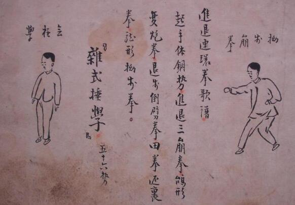
郭云深形意拳经抄本书影
形意拳术，有三层道理，有三步功夫，有三种练法。
三层道理：一、练精化气。二、练气化神。三、练神还虚，练之以变化人之气质，复其本然之真也。
三步功夫：
一、易骨：练之以筑其基，以壮其体，骨体坚如铁石，而形式气质，威严壮似泰山。
二、易筋：练之以腾其膜，以长其筋，俗语"筋长力大"，其劲纵横联络，生长而无穷也。
三、洗髓：练之以清虚起内，以轻松其体，内中清虚之象，神气运用，圆活无滞，身体动转，其轻如羽。
三种练法：
一、明劲：练之总以规矩不可易，身体运转要和顺不可乖戾，手足起落要整齐而不可散乱。拳经云：方者以正其中，即此意也。
二、暗劲：练之神气要舒展而不可拘，运用圆通活泼而不可滞。拳经云：圆者以应其外，即此意也。
三、化劲：练之周身四肢运转，起落进退皆不可着力，专神意运用之，虽是神意运用，惟形式规矩仍如前二者不可改移。虽然周身运转不着力，亦不能全不着力，总在神意之贯通耳。
明劲者，即拳之刚劲也。易骨者，即练精化气易骨之道也。因人身中先天之气与后天之气不合，体质不坚，故发明其道。大凡人之处生，性无不善，体无不健，根无不固，纯是先天。以后知识一开，灵窍一闭，先后天不合，阴阳不交，皆是后天血气用事，故血气盛行，正气衰弱，以致身体筋骨不能健壮。故昔达摩大师传下易筋、洗髓二经，习之以强壮人之身体，还其人之初面目。后岳武穆王扩充二经之义，作为三经：易骨、易筋、洗髓也。将三经又制成拳术，发明此经道理之用。
拳经云："静为本体，动为作用。"与古之五禽、八段练法有体而无用者不同矣。因拳术有无穷之妙用，故先有易骨、易筋、洗髓，阴阳混成，刚柔悉化，无声无臭，虚空灵通之全体。所以有其虚空灵通之全体，方有神化不测之妙用。故因此拳是内外一气，动静一源，体用一道，所以静为本体，动为作用也。因人为一小天地，无不与天地之理相合。惟是天地之阴阳变化皆有更易，人之一身既与天地之理相合，身体虚弱、刚戾之气岂不能易乎？即更易之道，弱者易之强，柔者易之刚，悖者易之和。所以三经者，皆是变化人之气质，以复其初也。
易骨者，是拳中之明劲，练精化气之道也。将人身中散乱之气，收纳于丹田内，不偏不倚，和而不流，用九要之规模锻炼，练至六阳纯全，刚健之至，既拳中上下相连，手足相顾，内外如一，至此拳中明劲之功尽，易骨之劲全，练精化气之功亦毕矣。
暗劲者，拳中之柔劲也（柔劲与软不同，软中无力，柔非无力也），即练气化神易筋之道也。先练明劲而后练暗劲，即丹道小周天止火再用大周天功夫之意。明劲停手，即小周天之沐浴也。暗劲手足停而未停，即大周天四正之沐浴也。
拳中所用之劲，是将形、气、神（神即意也）合住。两手往后用力拉回（内有缩力），其意如拔钢丝。两手前后用劲，左手往前推，右手往后拉，或右手往前推左手往回拉，其意如撕绵。又如两手拉硬弓，要用力徐徐拉开之意。两手或右手往外翻横、左手往里裹劲，或左手往外翻横、右手往里裹劲，如同练鼍形之两手，或是练连环拳之包裹。
拳经云："裹者，如包裹之不露。"两手往前推劲，如同推有轮之重物，往前推不动之意；又似推动而不动之意。两足用力，前足落地时，足跟先着地，不可有声，然后再满足着地。所用之劲，如同手往前往下按物一般。后足用力蹬劲，如同迈大步过水沟之意。拳经云："脚打踩意不落空"，是前足。"消息全凭后足蹬"，是后足。马有疾蹄之功，皆是言两足之意也。两足进退，明劲暗劲两段之步法相同，惟是明劲有声，暗劲则无声耳。
化劲者，即练神还虚，亦谓之洗髓之功夫也。是将暗劲练到至柔至顺，谓之柔顺之极处，暗劲之终也。
丹经云："阴阳混成，刚柔悉化，谓之丹熟。"柔劲之终，是化劲之始也。所以再加上功夫，用练神还虚，至形神俱杳，与道合真以至于无声无臭，谓之脱丹矣。拳经谓之"拳无拳，意无意，无意之中是真意"，是谓之化劲。练神还虚，洗髓之工毕矣。
化劲者，与练划劲不同。明劲暗劲亦皆有划劲。化劲是两手出入起落俱短，亦谓之短劲。如同手往着墙抓去，往下一划，手仍回在自己身上来，故谓之化劲。
练化劲者，与前两步功夫之形式无异，所用之劲不同耳。三会者，明暗化劲是一式。九转者，九转纯阳也，化至虚无而还于纯阳，是此理也。所练之时，将手足动作，顺其前两步之形式，皆不要用力，并非顽空不用力，周身内外全用真意运用耳。手足动作所用之力，有而若无，实而若虚。腹内之气所用亦不着意，亦非不着意，意在积蓄虚灵之耳。呼吸似有似无，与丹道功夫阳生之足采取归炉、封固停息沐浴之时呼吸相同。因此似有似无皆是真息，是一神之妙用也。
庄子云："真人之呼吸以踵"，即是此意，非闭气也。用功练去，不要间断，练到至虚，身无其身，心无其心，方是形神俱妙，与道合之境。此时能与太虚同体也。以后练虚合道，能至寂然不动，感而遂通，无入而不自得，无往而不得其道，无可无不可也。
拳经云："固灵根而动心者，武艺也；养灵根而静心者，修道也。"所以形意拳术与丹道合一者也。
形意拳起点三体式，两足要单重，不可双重。单重者，非一足着地一足悬起，不过前足可虚可实，着重在于后足耳。以后练各形式亦有双重之式，虽然是双重之式，亦不离单重之重心，以至极高、极俯、极矮、极仰之形式，亦总不离三体式单重之重心，故三体式为万形之基础也。
三体式单重者，得其中和之起点，动作灵活，形式一气，无有间断耳。双重三体式者，形式沉重力气极大，惟是阴阳不分，乾坤不变，奇偶不显，刚柔不判，虚实不明，内开外合不清，进退起落动作不灵活。所以形意拳三体式不得其单重之中和，先后天意不交，刚多柔少，失却中和，道理亦不明，变化亦不通，自被血气所拘，拙劲所捆。此皆是被三体式双重之所拘也。若得着单重三体式中和之道理以后行之，无论单重双重各形式，无可无不可也。
形意拳之道，练之极易亦极难。易者，是拳术之形式至易至简而不繁乱。其拳术之始终、动作运用，皆人之所不虑而知、不学而能者也。周身动作运用亦截平常之理。惟人之未学时，手足动作运用无有规矩而不能整齐，所教授者不过将人之不虑而知、不学而能、平常所运用之形式，入于规矩之中，四肢动作而不散乱者也。果练之有恒而不间断，可以至于至善矣。若到至善处，诸形之运用无不合道矣。以他人观之，有一动一静、一言一默之运用，奥妙不测之神气，然而自己并不知其善于拳术也。因动作作用皆是平常之道理，无强人之所难，所以拳术练之极易也。
《中庸》云："人莫不饮食也，鲜能知味也。"难者，是练者厌其拳之形式简单而不良于观，以致半途而废者有之；或是练者恶其道理平常而无有奇妙之法则，自己刚好刚劲之气，身外又务奇异之形，故终身练之而不能得着形意拳术中和之道也。因此好高务远、看理偏僻，所以拳术之道理得之甚难。《中庸》："道不远人，人之为道而远人"，即此意也。
形意拳之道无他，神气二者而已。丹道始终全仗呼吸，起初大小周天以及还虚之功者，皆是呼吸之变化耳。拳术之道亦然。惟有锻炼形体与筋骨之功，丹道是静中求动，动极而复静也；拳术是动中求静，静极而复动也。其初练之似异，以至还虚则同。形意拳经云："固灵根而动心者，敌将也；养灵根而静心者，修道也。"所以形意拳之道即丹道之学也。丹道有三易：练精化气、练气化神、练神还虚。拳术亦有三易：易骨、易筋、洗髓。三易即拳中明劲、暗劲、化劲也。练至拳无拳、意无意、无意之中是真意，亦与丹道练虚合道相合也。
第一层练拳术之呼吸，将舌卷回，顶住上腭，口似开非开，似合非合，呼吸任其自然，不可着意于呼吸，因手足动作合于规矩，是为调息之法则，亦即练精化气之功夫也。
第二层练拳术之呼吸，口之开合、舌顶上腭等规矩照前，惟呼吸与前一层次不同。前者手足动作是调息的法则，此是息调也。前者口鼻之呼吸不过借此以通内外也。此二层之呼吸，着意与丹田之内呼吸也，又名胎息，是为练气化神之理也。
第三层练拳术之呼吸，与上两层之意又不同。前一层是明劲有形于外，二层是暗劲有形于内。此呼吸虽有而若无，勿忘勿助之意思，即是神化之妙用也。心中空空洞洞，不有不无，非有非无，是为无声无臭还虚之道也。此三种呼吸，为练拳术始终本末之次序，即一气贯通之理，自有而化无之道也。
人未练拳术之先，手足动作顺其后天自然之性，由壮而老以至于死。道家逆运先天，转乾坤，扭气机，以求长生之术。拳术亦然。起点从平常之自然之道逆转，其机由静而动，再由动而静，成为三体式。其姿势两足要前虚后实，不俯不仰，不左斜不右歪，心中要虚空宁静无物，一毫之血气不能加于其内，要纯任自然虚灵之本体。由着本体而再萌动练去，是为拳中纯任自然之真劲，亦谓人之本性，又谓之丹道最初还虚之理，亦谓之明善复初之道。
拳中之内劲，是将人之散乱于外之神气，用拳中之规矩，手足身体动作，顺中用逆，缩回于丹田之内，与丹田之元气相交，自无而有，自微而著，自虚而实，皆是渐渐积蓄而成，此谓拳之内劲也。丹书云："以凡人之呼吸，寻真人之呼处。"庄子云："真人呼吸以踵"，亦是此意也。
呼吸纯任自然，用真意之元神，引之于丹田。腹虽实而若虚，有而若无。《老子》云："绵绵若存"，又云："虚其心而灵性不昧，振道心，正气常存"，亦此意也，此理即拳中内劲之意义也。
形意拳之用法有三层：有有形有象之用；有有名有相无迹之用；有有声有名无形之用；有无形无相无声无臭之用。
拳经云："起如钢锉，起者去也。落如钩竿，落者回也。"未起如摘子，未落如坠子，起如箭，落如风，追风赶月不放松。起如风，落如箭，打倒还嫌慢。足打七分，手打三，五行四梢要合全。气连心意随时用，硬打硬进无遮拦，打人如走路，看人如蒿草。胆上如风响，起落似箭钻。进步不胜，必有寒食之心。此是初步明劲，有形有相之用也。
到暗劲之时，用法更妙：起似伏龙登天，落如霹雷击地。起无形，落无踪，起意好似卷地风。起不起，何用再起；落不落，何用再落。低之中望为高，高之中望为低。打起落如水之翻落，不翻不钻，一寸为先。脚打七分手打三，五行四梢要合全。气连心意随时用，打破身式无遮拦。此是二步暗劲，有形无迹之用也。
拳无拳，意无意，无意之中是真意。拳打三节不见形，如见形影不为能。随时而发，一言一默，一举一动，行止坐卧，以至饮食茶水之间皆是用。或有人处，或无人处，无处不是用，所以无入而不自得，无往而不得其道，以致寂然不动，感而遂通也。此皆是化劲，神化之用也。
形意拳术，明劲是小学功夫，进退起落，左转右旋，形式有间断，故谓之小学。暗劲是大学之道。上下相连，手足相顾，内外如一，循环无端，形式无有间断，故谓之大学。此喻是发明其拳所以然之理也。《论语》云："一以贯之。"此拳亦是求一以贯之道也。阴阳混成，刚柔相合，内外如一，谓之化劲，用神化去，至于无声无臭之德也。《孟子》云："大而化之之谓圣，圣而不可知之之谓神。"丹书云："形神具杳，乃与道合真之境。"拳经云："拳无拳，意无意，无意之中是真意。"如此者，不见而章，不动而变，无为而成，寂然不动，感而遂通也。
《老子》云："得其一而万事毕。"人得其一谓之大。拳中内外如一之劲用之于敌，当刚则刚，当柔则柔，飞腾变化，无入而不自得，亦无可无不可也，此之谓一以贯之。一之为用，虽然纯熟，总是有一之形迹也，尚未到至妙处。因此要将一化去，化到至虚无之境，谓之至诚至虚至空也。如此大而化之之谓圣、圣而不可知之之谓神之道理得矣。拳经云："拳去不空回，空回总不奇"，是此意也。
拳经云：上下相连，内外合一。俗云，上下是头、足也。亦云：手、足也。按拳中道理言之，是上呼吸之气与下呼吸之气相接也，此是上下相连，心肾相交也。内外合一者，是心中神意下照于海底，腹内静极而动，海底之气微微自下而上，与神意相交，归于丹田之中，运贯于周身，畅达于四肢，融融和和，如此方是上下相连，手足自然相顾，合内外而为一者也。
练拳术不可固执不通。若专求力，即被力拘。专求气，即被气所拘。若专求沉重即为沉重所捆坠。若专求轻浮，神气则被轻浮所散。所以然者，练之形式顺者，自有力。内里中和者，自生气。神意归于丹田者，身自然重如泰山。将神气合一化成虚空者，自然身轻如羽。故此不可以专求，虽然求久有所得焉。亦是有若无，实若虚，勿忘勿助，不勉而中，不思而得，从容中道而已。
形意拳之横拳，有先天之横，有后天之横，有一行之横。先天之横者，由静而动，为无形之横拳也。横者中也，《易》云："黄中通理，正位居体"，即此意也。拳经云："起无形，起为横"，皆是也（此起字是内中之起，自虚无而生有，真意萌发之时，在拳中谓之横，亦谓之起）。此横有名无形，为诸形之母也，万物皆含育于其中矣。其横则为拳中之太极也。后天之横者是拳中外形手足，一动即名为横也。此横有名有式，无有横之相也。因头手足肩肘胯膝名七拳，外形七拳一动即名为横，亦为诸式之干也，万法亦皆生于其内也。
形意拳术，头层明劲，谓之练精化气，为丹道中武火也。第二层暗劲，为练气化神，为丹道中文火也。三层化劲，谓之练神还虚，谓丹道中火候纯也。火候纯而内外一气成矣。再练亦无劲，谓无火，谓之练虚合道，以至行止坐卧、一言一默，无往而不合其道也。拳经云："拳无拳，意无意，无意之中是真意。"至此无声无臭之德至矣。先人诗曰："道本自然一气游，空空静静最难求，得来万法皆无用，身形应当似水流。"
形意拳谱拳经云：形意拳之道有"七拳"、"八要"、"二总"、"三毒"、"五恶"、"六猛"、"六方"、"十目"、"十三格"、"十四处打法"、"十六处练法"、"九十一拳"、"一百零三枪"之论。
七拳：头、肩、肘、手、胯、膝、足。
八字：斩（劈拳也），截（钻拳也），裹（横拳也），跨（崩拳也），挑（践拳亦即燕形也），顶（炮拳也），云（鼍形也），领（蛇形也）。
二总：三拳、三棍为二总。三拳是天、地、人，生法无穷。三棍是天、地、人，生生不已。
三毒：三拳、三棍精熟悉为三毒。
五恶：得其五精，即为五恶。
六猛：六合练成，即为六猛。
六方：内外合一家，为六方。
八要：心定神宁，神宁心安，心安清净。清净无物，无物气行，气行绝象，绝象觉明，觉明则神气相通，万气归矣。
十六处练法：一寸、二践、三钻、四就、五夹、六合、七齐、八正、九胫、十惊、十一起落、十二进退、十三阴阳、十四五行、十五动静、十六虚实。
——郭云深《能说形意拳经》（孙禄堂《拳意述真》第四章收录）
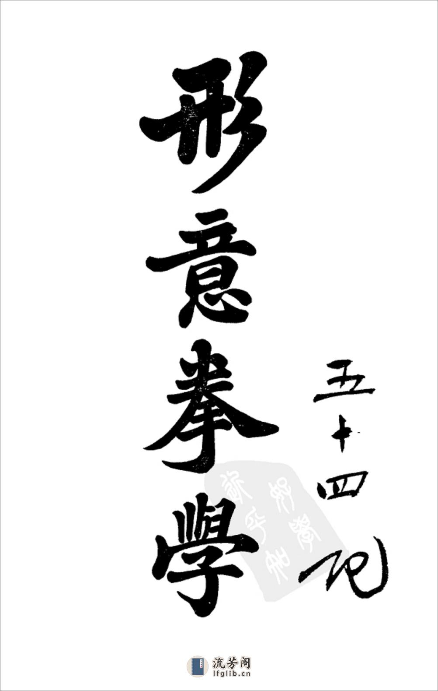
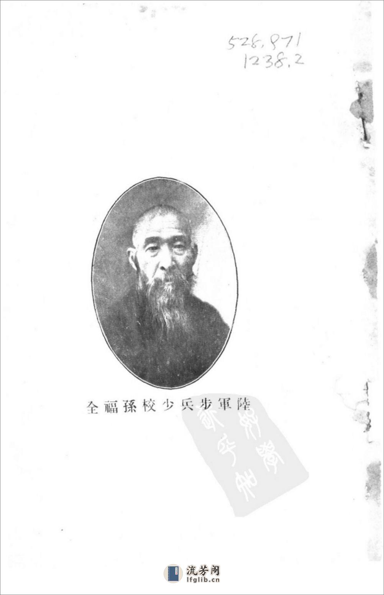
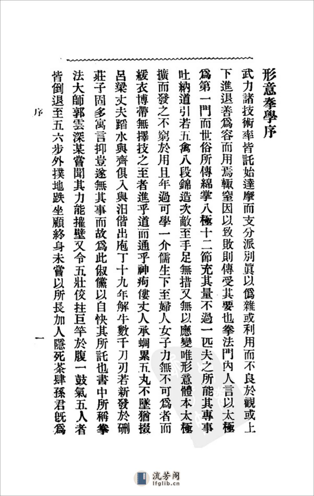
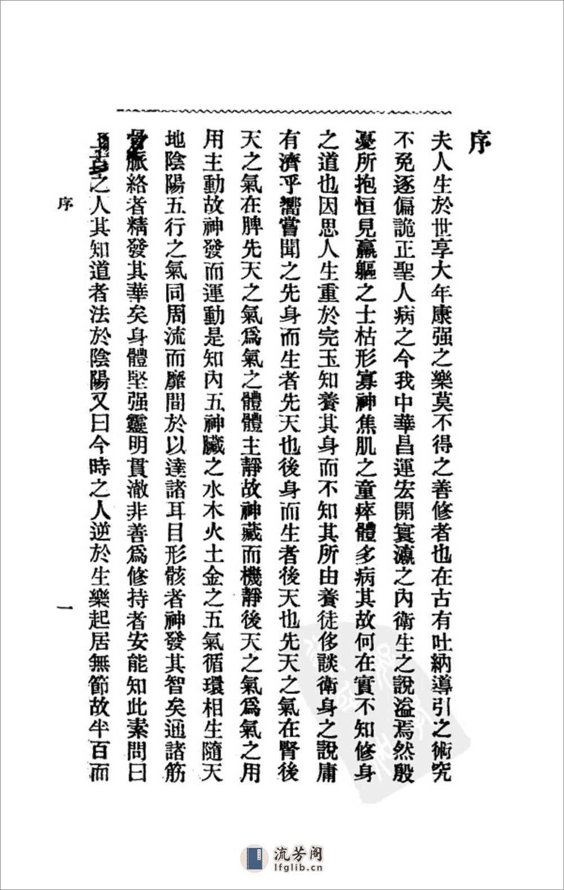
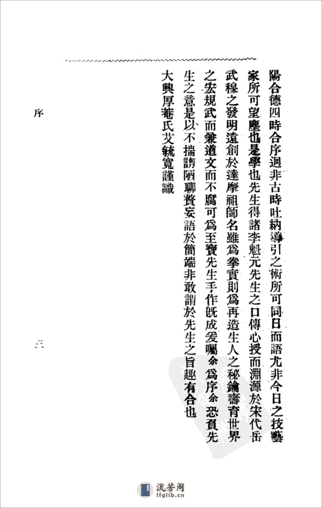
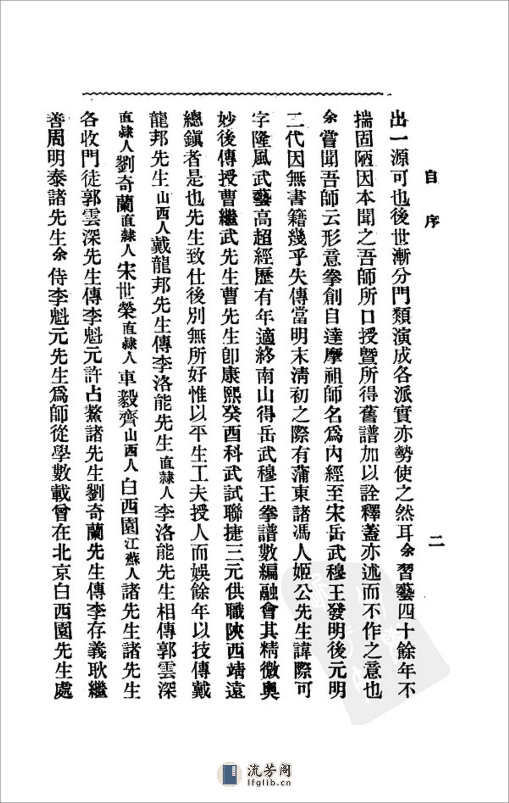
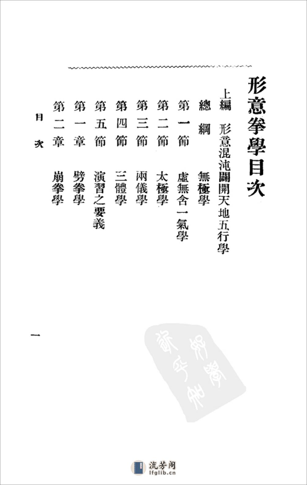
孙禄堂《形意拳学》原版书影（民国四年刊行，流芳阁古籍图书馆藏本）
余今已学武矣，又恐流俗余是。未学以前，所慕者形意一门。不知形意一门内有无极、太极、五行、八卦，起点诸法，既其纲领。若论近世太极八卦二门，外家内家两派，及一切体操，推其源，出自古昔一师流传。沿及后世，渐分门类。如他项拳脚，武技继传真伪，余未敢断定。但循理设想，依据考证，惟太极、形意、八卦三门，盖出一人遗传。仍宜反本归源为是。因揣情度理，三门合为一体。余故求师访友，终岁遨游四方，迄于光绪甲申年（1884年）十一月中旬，在保定城内拜李奎元先生门下受业。
——孙禄堂《形意拳学》初版自序（1915年）
孟子云：尧舜之道，孝弟而已矣。拳术之道亦无他，气力和顺而已矣。余所述形意拳学，年前已出版矣。乃于八卦学，未能笔之于书，每怀谦然未安。因思幼从余师李魁元先生时，先生常云天地之理变化无穷。晤对闲谈，常提及北京有八卦拳术一门，其技之精，理之细，亦甚奥妙测。余当时存诸心中，总未得门而入。
至丁亥（1887年）年，因事赴京，在白西园先生处遇程廷华先生。白君与余指引相见，云先生精通八卦拳术。初见先生练时，其意与形意拳大相悬殊。时余练形意拳方三四年功夫，于彼此之劲不能周知，心虽爱慕，又恐与自己所练之拳气力不和。后先生见余屡怀疑惑，极力开导拳中之理，余始免去疑心。方入手时，觉与形意拳术气力相背，至年余功夫，两拳之劲微觉相合。每日早习形意，晚习八卦，如是十余年，两拳之劲始不分彼此，练习亦不分早晚，两体亦觉如一。此时始悟十年前初与先生练时，并非两拳之劲相背，乃我身中之气力有亏也。
自此以后，每遇同道之人，不分门类，互相研究，又十余年，自觉身中两拳之劲合一。又有各家同道之人各法相助，以至用时，起落进退刚柔伸缩，无不自如。当此之时，艺贯二家，学业精进，心中愉悦，自以为全体无所不知矣。
乃至辛丑年（1901年），又遇同道张秀林、杨春甫二君，精于太极拳学。余心又有甚爱之。及与二君互相研究，询问此拳之劲，心中大相骇异，觉作所练两拳之劲又有各家之法相助，然并不能与此技之劲相符合。因此又与彼等加意研究三四月功夫，始略得其当然之理。如是复练习三四年，并不能知其底确详细之理。
后至民国元年（1912年），在北京得遇郝为真先生，先生精于太极拳学。初见面时互相爱慕。余因爱慕此技，即将先生请至家中，请先生传授讲习。三四个月功夫，此技之劲方知其所以然之理。自此以后昼夜习练，至三年豁然大悟，能将三家之劲合为一体。心中方无形意、八卦、太极之意。又始知三家皆三元之理。
夫八卦天也，形意地也，太极人也，三家合一理也。练习之法，形意以经之，八卦以纬之，太极以和之，即圣人云："兴于诗，立于礼，成于乐"也。余尝自揣三元性质：形意譬如钢球铁球，内外诚实如一；八卦譬如绒球与铁丝盘球，周围玲珑透体；太极如皮球，内外虚灵，有有若无、实若虚之理，此是三元之性质也。
形象虽分三元，要不出人丹田之气也。天地人三才，亦即太极一气之流行也，故三家合为一体。以后好武诸君，务去彼此之见。谚云："一处不到一处迷。"此言良非虚谬。吾人练艺，总要与同道中人互相研究，始能有益。
孔子云："吾道一以贯之。"余所著形意拳学，外表由明善以复初，亦即万殊一本之道也。故公余之暇，探辑群言，付以己意，不揣冒昧，遂将所习之技编纂成书，以聊助爱技击后世钦好者或作入门之径，是则余之志也。
——孙禄堂《八卦拳学》自序
余自幼练拳以来，闻诸先生之言，云：拳即是道。余闻之怀疑。至练暗劲，刚柔合一，动作灵妙，一任心之自然，与同道人研究，彼此各有所会。惟练化劲之后，内中消息与同道人言之，知者多不肯言，不知者茫然莫解，故笔之于书，以示同道。倘有经此景况者，可以互相研究，以归至善。
余练化劲所经者，每日练一形之式，到停式时，立正，心中神气一定，每觉下部海底处（即阴桥穴处）如有物萌动。初不甚着意。每日练之有动之时，亦有不动之时，日久亦有动之甚久之时，亦有不动之时，渐渐练于停式，心中一定，如欲泄漏者。想丹书坐功有真阳发动之语，可以采取。彼是静中动，练静坐者知者亦颇多，乃彼是静中求动也。此是拳术动中求静，不知能消化否。又想拳经亦有"处处行持不可移"之言，每日功夫总不间断。
以后练至一停式，周身就有发空之景象，真阳亦发动而欲泄。此情形似柳华阳先生所云：复觉真元之意思也。自觉身子一毫亦不敢动，动即要泄矣。心想仍用拳术之法以化之。内中之意，虚灵下沉，注于丹田，下边用虚灵之意，提住谷道，内外之意思仍如练拳趟子。一般意注于丹田片时，阳即收缩，萌动者上移于丹田矣。此时周身融和，绵绵不断。当时尚不知采取转法轮之理，而丹田内如同两物相争之状况，四五小时，方渐渐安静。
心想不动之理，是余练拳术之时，呼吸二息仍在丹田之中，至于不练之时，虽言谈呼吸并不妨碍内中之真息，并非有意存照，是无时不然也。庄子云："有真人呼吸以踵"，大约即此意也。因有不息而息之火，将此动物消化，畅达于周身也。
以后又如前运用，仍提在丹田，仍是练拳趟子，内外总是一气，缓缓悠悠练之，不敢有一毫之不平稳处。动作练时，内中四肢融融，绵绵虚空，与前站着之景况无异。亦有练一趟而不动者，亦有练二趟而不动者。嗣后亦有动时，仍是提至丹田，而动练拳之内呼吸，转法轮用意之用于丹田，以神转息而转之，从尾闾至夹脊，至玉枕，至天顶而下，与静坐功夫相同，下至丹田。亦有二三转而不动者，亦有三四转而不动者，所转者与所练趟子消化之意相同。
以后有不练之时，或坐立，或行动，内中仍以用练拳之呼吸，身子行路亦可以消化矣。以后甚至于睡熟，内中忽动，动而即醒，仍以用练拳之呼吸而消化之。以后睡熟而内中不动，内外周身四肢忽然似空，周身融融和和，如沐如浴之景况。睡时亦有如此情形，而梦中亦能用神意呼吸而化之。因醒后已知梦中之情形而化之也。
以后练拳术睡熟时，内中即不动矣。后只有睡熟时，内外忽然有虚空之时，白天行止坐卧，四肢亦有发空之时，身中之情意异常舒畅。每逢晚上练过拳术，夜间睡熟时，身中发虚空之时多；晚上要不练拳术，睡时发虚空之时较少。以后知丹道有气消之弊病。自己体察内外之情形，人道缩至甚小，消除百病，精神有增无减。以后静坐亦如此，练拳亦如此，到此方知拳术与丹道是一理也。以上是余练拳术自己身体内外之所经验也，故书之以告同志。
拳术至练虚合道，是将真意化到至虚至无之境，不动之时，内中寂然，空虚无一动其心，至于忽然有不测之事，虽不见不闻而能觉而避之。《中庸》云："至诚之道可以前知"，是此意也。
能到至诚之道者，三派拳术中，余知有四人而已：形意拳李洛能先生，八卦拳董海川先生，太极拳杨露禅先生、武禹襄先生。四位先生皆有不见不闻之知觉。其余诸先生皆是见闻之知觉而已。如外有不测之事，只要眼见耳闻，无论来者如何疾快，俱能躲闪。因其功夫入于虚境而未到于至虚，不能有不见不闻之知觉也。
其练他派拳术者，亦常闻有此境界，未能详其姓氏，故未录之。
——孙禄堂《拳意述真》（民国十二年，1923年刊行）
——辑录毕——